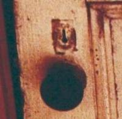
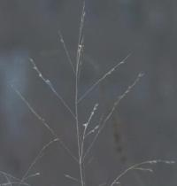
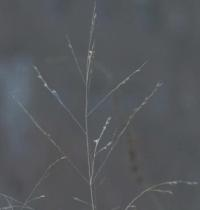
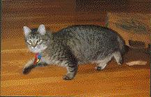
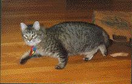
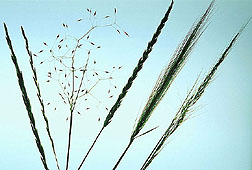
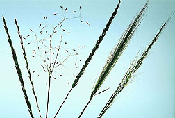
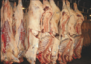
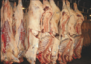

Anticipating a long wait, I brought a book to my last xray and doctor appointments. As I had to walk a quarter mile from the Brigham to the doctor's office carrying a hefty packet of CTs and MRIs, my criteria was that the book be small enough to fit in my coat pocket. I grabbed a ancient paperback edition of Bruno Schulz' The Street of Crocodiles from my bookshelf, one I had bought in Chicago 25 years ago.
Later, when I opened it in the waiting room, a piece of yellowed paper fell out -- a bus ticket receipt: Trombly Motor Coach, Boston to Andover, 9 06 78. I stared at it in wonder. It didn't take me long to figure out where I'd been and where I was going on that day.
Today, looking at the receipt, I note the slogan: "Where you go is your business. How you go is our business." There's a slightly disreputable, complicit ring to that slogan, as if the company were perfectly content to ferry murderers to their victims or safecrackers to the bank vault -- as long as they were kept blissfully ignorant. Don't ask, don't tell.
So what was my business on September 6, 1978 ?
It was disreputable.
I was escaping. On the lam.
I've noticed that, twice, someone has found my blog via a google search on "quitting residency." I felt a pang of absolute empathy for what I imagine to be a miserably unhappy resident or intern, contemplating the unthinkable. Mon semblable, mon frere. Or ma soeur, as the case may be.
I began a residency in psychiatry in Chicago in 1978. It was a disastrously wrongheaded, ill-thought-out, neurotically fucked-up move on my part. Totally gonzo. Off the charts. If I had set out to make a bad choice -- medical school -- worse, I could not have picked a better method. I wasn't crazy about medicine. I'd hated internship. Psychiatry seemed a lot like poetry and literature. So I'd seek asylum there. I'd forgotten about one small thing: psych patients.
I could not have been more unhappy. I was, to start with, extremely homesick. This was compounded by the fact that, instead of beginning at the University with my fellow residents, I was sent across town -- to the old slaughterhouse district, I swear -- to a grim joint called ISPI, a heavily research-oriented state hospital, the Illinois State Psychiatric Institution. So I had no chance to bond with my fellow residents -- a task that, even under the best of circumstances for this shy recluse, would have been difficult.
There was a relationship, too. There's always a relationship. It came apart and came together several times over the two months I was in Chicago. The fella back home came to the windy city several times. I sent him away and resummoned him several times. And eventually married him, had a child with him, and divorced him but that's another story.
Last, and worst, there was night call. Which meant being the first doctor summoned to the ER when a psych emergency arrived. I felt utterly unsupported and unprepared. I didn't know the staff on the psych ward where I'd be admitting patients. I barely knew where the ward itself was. I'd done a year of internship, and could handle post op fevers and congestive heart failure, but psych was a whole new gig.
Like any new resident, I was green. Probably greener than most. Virtually clueless. I vividly remember consulting the neurology service one night on a patient who was probably catatonic. The resident who responded was peremptory, scornful and abusive. This was not, he lectured, a neurological case. It was clearly psychiatric. How stupid could I possibly be ? I can still feel the sting of it to this day. A teaching hospital at its best.
The other ER patient I vividly remember was more colorful. Literally. She wore a purple feather boa, honest, and shiny silver stockings. She clung to the arm of the (male) ER resident, fawning crazily and seductively over him, and glared at me with undisguised hatred and hostility. (My over-fed mind whirred: Borderline personality disorder. Often histrionic. Engages in splitting of the world into good and bad. Lack of fusion of the internalized imagos of good and bad mothers. Often characterized by self-mutilation and suicide gestures.) OK, fine. But now what ?

Fortunately for me, while I was spinning my Freudian psychodynamic wheels, she eloped from the ER. I prayed she would not return. Great case, eh ?
There was another sharp-tongued, young, long-term patient on the ISPI chronic ward, who also instantly had me pegged (my deer in the headlights demeanour was not subtle) as an easy mark. I remember her acid ridicule of my "little flat shoes." Foreshadowing by several decades the Hannibal Lecter/ Jodie Foster interaction in Silence of the Lambs.
I was no Jodie. In fact, Henry, a tactless colleague at ISPI, went out of his way to tell me I reminded him of Sylvester Stallone's girlfriend in the Rocky movie: the girlfriend before she became glamorous. The painfully shy, bespectacled woman in a wool hat and a dowdy coat. And that maybe I should take dancing lessons. Or something. Thanks a bunch, Henry.
Yes, night call was sheer terror. I'd begin dreading it days in advance. On call I would sit, hyperventilating, praying my pager would not go off, in an office I apparantly shared with Dr S.. There was no evidence of me in that office. It was full of her tasteful objets d'art and memorabilia. I felt like a trespasser.
Dr. S. had once been a classmate of that hyphenated chick, Dr Kubler-Ross: there was a framed photo of them together amidst Dr S's tasteful baubles. I was so so paralyzed by fear, that I spent one on-call night curled in fetal position on Dr S's sisal carpet attempting to sleep.
All that summer I was reading esoteric books on existential analysis, psychoanalysis and phenomenology -- books mostly over my head, and of no use whatsoever in the midnight emergency room. I reread Camus' The Plague. Read lots of Binswanger. Merleau-Ponty. Simone Weil. Neruda. Harry Stack Sullivan. Sigmund Freud. Anna Freud. And, of course, Bruno Schulz.
None of this prepared me to assess and/or treat psychosis in the ER. None of it helped me understand my own distress.
So, one afternoon in mid August, after days of agonized hand-wringing and vacillation, I left. Eloped as abruptly and completely and illicitly as my feather-boa'ed ER patient had from the ER. I can still recall the sense of absolute freedom and relief I felt as I took a train, then a bus back to Massachusetts. I left, telling no one, not even the director of the program, until I'd arrived home.
He persuaded me to return. Chastened, I did. They made some "helpful" changes. Nothing helped. So, on September 6, I once again fled back east, by plane, then by the infamous Trombley "where you go is your business" Motor Coach.
This time the director had no problem accepting my resignation.
Quitting a residency is a Very Bad Thing. It leaves the remaining residents, already overworked, with all the more nights of call and patients to cover. Sometimes new residents can be recruited, sometimes not. It's a huge blot on one's resume. It's a very harmful and destructive act, and I did it in the worst possible way.
The feeling of exhiliaration and relief I felt was indescribable. It was a moment of Pure Bartleby, my first and most breathtaking. There have been other, lesser ones. But this was the spectacular refusal.
Sixteen years later, when I was finally finishing training in internal medicine, two residents left our program. One simply never returned from a west coast rotation, another was asked to leave. We all had extra call, and extra patients.
Yes, Virginia, there is a karma clause.
Monday, December 08, 2003
Sunday, December 07, 2003
Our Daily Steak
I read, recently, that bakers have taken an economic hit because of the late Dr Atkins' pandemic "low carb" diet. (Yes, I have a beef with his diet. And I'm not too chicken to call it hogwash. There's something very fishy about how folks are following it like sheep.) I'm sorry. I had to say that. I've imagined a sandwich made out of five kinds of animals, which I would call The Slaughterhouse Five. The McSlaughterhouse Five.
But back to bread and the poor bakers. It's such a pity. Breaking bread is so much more civilized and peaceful than barbecue. Of course, I am biased. I am a vegan, and this is Paula's House of Toast, not Paula's Steak House. Bakers are apparantly trying to devise "low carb" bread. Made out of what ? Pork ?
Surprisingly, it's not always easy for a vegan to find bread that's free of all animal products. Many types of bread contain whey, egg white and honey, not to mention polysyllabic dough conditioners that may or may not be animal-derived. My bread life got a lot simpler when I stopped worrying about those.
If one doubts even for a second the redemptive power of carbohydrates, one needs but turn to literature: first, to Italo Calvino's story "Theft in a Pastry Shop," and then to Raymond Carver's "A Small, Good Thing."
The Lord's prayer notwithstanding, one can probably find a scriptural basis for the Atkins diet (or anything, for that matter.) God himself showed a carnivorous preference for Abel's burnt offering of "firstlings of the flock" -- baby lamb and veal, for goodness sakes -- over Cain's "fruits of the ground." This has always interested me. Cain, after all, was a farmer. He offered the best of what he had. And was rejected. This gets glossed over in the haste to get to the juicy fratricidal parts.
I suppose the theological take-home message is "Life isn't fair, buddy. Deal with it." Or, "I am omnipotent, do not question my ways." Or, "I'm God. If I wanna set you up for failure, who's gonna stop me ?"
One could even argue that Cain was blessed with the bigger challenge -- the juicier, more advanced koan. Which, of course, he immediately and spectacularly flunked. But still, YHWH considered Cain an advanced enough student to lay it on him. That's got to count for something.
He'll try the koan out again, later, on Job.
But back to bread and the poor bakers. It's such a pity. Breaking bread is so much more civilized and peaceful than barbecue. Of course, I am biased. I am a vegan, and this is Paula's House of Toast, not Paula's Steak House. Bakers are apparantly trying to devise "low carb" bread. Made out of what ? Pork ?
Surprisingly, it's not always easy for a vegan to find bread that's free of all animal products. Many types of bread contain whey, egg white and honey, not to mention polysyllabic dough conditioners that may or may not be animal-derived. My bread life got a lot simpler when I stopped worrying about those.
If one doubts even for a second the redemptive power of carbohydrates, one needs but turn to literature: first, to Italo Calvino's story "Theft in a Pastry Shop," and then to Raymond Carver's "A Small, Good Thing."
The Lord's prayer notwithstanding, one can probably find a scriptural basis for the Atkins diet (or anything, for that matter.) God himself showed a carnivorous preference for Abel's burnt offering of "firstlings of the flock" -- baby lamb and veal, for goodness sakes -- over Cain's "fruits of the ground." This has always interested me. Cain, after all, was a farmer. He offered the best of what he had. And was rejected. This gets glossed over in the haste to get to the juicy fratricidal parts.
I suppose the theological take-home message is "Life isn't fair, buddy. Deal with it." Or, "I am omnipotent, do not question my ways." Or, "I'm God. If I wanna set you up for failure, who's gonna stop me ?"
One could even argue that Cain was blessed with the bigger challenge -- the juicier, more advanced koan. Which, of course, he immediately and spectacularly flunked. But still, YHWH considered Cain an advanced enough student to lay it on him. That's got to count for something.
He'll try the koan out again, later, on Job.
Saturday, December 06, 2003
Confession
I walked to the Charles River bike path yesterday. I needed something bracing and gratuitous and palpable to counteract the internet Christmas shopping that I'd done. Plus I thought I should get in a bit of exercise before the Northeaster hit, which, as predicted, it has and still is doing no end in sight.
So I looked at the beautiful nameless grass again, probably for the last time before its burial.
I would love to know its name.
Which brings me to my confession.
One of my favorite books is Weeds of the Northeast by Richard Uva, Joseph Neal and Joseph DiTomaso. It's a sturdily clothbound book, a beautiful green, and of a satisfying but not impossible heft. For each plant there is page of essential descriptive text, and a facing page of color photos. There are charts and tables and taxonomies, too, scientific matters that I've only begun to explore.
I bought it after we gave up on having a lawn. We have some remnant lawn, to be sure, but each year whole ecosystems of interesting plants compete with it and win. The overall effect is green, and up close it's fascinating: blue field madder, poor man's pepper, spotted spurge, broadleaf plantain, yellow hawkweed, shepherd's purse, corn speedwell, nutsedge, swallow-wort, nightshade, red clover, dandelions, chicory, asters, pigweed, ailanthus, wild pansy -- and, of course, crabgrass. And, of course, there was a poem in it.
On the last page of the weed book are four black and white photos -- the three authors, and and Andrew Senesac, who gave "invaluable" "cooperation" and "counsel."
My confession ? I have a serious crush on these men.
Mr Uva, a PhD candidate at Cornell when he wrote the book, is a young, dark-haired, intense looking man. He gazes at the camera with a determined, unsmiling expression, thin lips pressed firmly shut. The book has come from his Master's thesis.
Mr Neal, also young, was a professor at Cornell; in his picture, he looks pleased, almost amused. He has thick hair, and a brush mustache. His eyes twinkle as if with secret delight.
Mr DiTomaso is older, thin, slightly furrowed, darkly handsome. He smiles formally for the camera. He seems kind, wise and fatherly.
Mr Sesenec is blond, square faced; he has a high forehead, and wears enormous, clear-frmed glasses. In the photo, he's smiling. He appears content. Well-pleased.
Significantly, recursively, Mr Senesec appears on page 147 in the photo of a "Jerusalem Artichoke habitat." This weed, also called an earth-apple or a girasole, is a "tall, rhizomatous and tuberous perrennial," with, "aggressive" tendencies. Its tubers are edible. And, in the photo, the plant, sunflower-like, towers over Mr Senesec.
Except for a few fingers holding seelings, his is the only human presence in all the weedy photos of the book.
It is shocking, and strange. Andrew in a prospect of Artichokes.
I have a thing for serious, scientific men. I have long harbored a secret passion for the Army Corp of Engineers. Against all reason and politics. In my imagination, they still use slide rules. They have brief cases, and rolls of blueprints under their arms. In my imagination, they arrive on the scene of disasters, bristling with serious competence, and make things right. Or they engineer marvelous wonders, with monk-like dedication and single-mindedness. They are austere, and probably celibate.
The same goes for the CDC. You know the ones -- the men in chinos and blue oxford shirts with sleeves partly rolled up, who deplane on the tarmac of a plague-ridden city, brief cases in hand, ready to do serious epidemiology.
And hydrologists. The custodians of water. The builders of reservoirs and aqueducts, the purifiers of drinking water, the treaters of sewage. The tenders of the pumps and the pipes. These are noble men, too, with a grave calling. Just say the word "aquifer" and you will get a hint at what I mean.
As soon as I read Weeds of the Northeast I knew Drs. Uva, Neal, DiTomaso and Senesec were members of the same fraternity: serious scientific men. I must confess that, on my riverwalks, from time to time, I have imagined a tall, serious botanist emerging from the thicket -- usually Uva or Senesec -- as I crouch gazing at the beautiful, nameless grass.

He will squat beside me, and gravely inspect the plant, peering at its ligule, auricle and efflorescence, perhaps even pulling out a magnifying lens to look for hairs on the blade and sheath, and then, knowing, he will turn to me and tell me the name of the beautiful grass.
I will thank him. Nodding gravely, he will disappear into the woods.
All in a day's work.
So I looked at the beautiful nameless grass again, probably for the last time before its burial.
I would love to know its name.
Which brings me to my confession.
One of my favorite books is Weeds of the Northeast by Richard Uva, Joseph Neal and Joseph DiTomaso. It's a sturdily clothbound book, a beautiful green, and of a satisfying but not impossible heft. For each plant there is page of essential descriptive text, and a facing page of color photos. There are charts and tables and taxonomies, too, scientific matters that I've only begun to explore.
I bought it after we gave up on having a lawn. We have some remnant lawn, to be sure, but each year whole ecosystems of interesting plants compete with it and win. The overall effect is green, and up close it's fascinating: blue field madder, poor man's pepper, spotted spurge, broadleaf plantain, yellow hawkweed, shepherd's purse, corn speedwell, nutsedge, swallow-wort, nightshade, red clover, dandelions, chicory, asters, pigweed, ailanthus, wild pansy -- and, of course, crabgrass. And, of course, there was a poem in it.
On the last page of the weed book are four black and white photos -- the three authors, and and Andrew Senesac, who gave "invaluable" "cooperation" and "counsel."
My confession ? I have a serious crush on these men.
Mr Uva, a PhD candidate at Cornell when he wrote the book, is a young, dark-haired, intense looking man. He gazes at the camera with a determined, unsmiling expression, thin lips pressed firmly shut. The book has come from his Master's thesis.
Mr Neal, also young, was a professor at Cornell; in his picture, he looks pleased, almost amused. He has thick hair, and a brush mustache. His eyes twinkle as if with secret delight.
Mr DiTomaso is older, thin, slightly furrowed, darkly handsome. He smiles formally for the camera. He seems kind, wise and fatherly.
Mr Sesenec is blond, square faced; he has a high forehead, and wears enormous, clear-frmed glasses. In the photo, he's smiling. He appears content. Well-pleased.
Significantly, recursively, Mr Senesec appears on page 147 in the photo of a "Jerusalem Artichoke habitat." This weed, also called an earth-apple or a girasole, is a "tall, rhizomatous and tuberous perrennial," with, "aggressive" tendencies. Its tubers are edible. And, in the photo, the plant, sunflower-like, towers over Mr Senesec.
Except for a few fingers holding seelings, his is the only human presence in all the weedy photos of the book.
It is shocking, and strange. Andrew in a prospect of Artichokes.
I have a thing for serious, scientific men. I have long harbored a secret passion for the Army Corp of Engineers. Against all reason and politics. In my imagination, they still use slide rules. They have brief cases, and rolls of blueprints under their arms. In my imagination, they arrive on the scene of disasters, bristling with serious competence, and make things right. Or they engineer marvelous wonders, with monk-like dedication and single-mindedness. They are austere, and probably celibate.
The same goes for the CDC. You know the ones -- the men in chinos and blue oxford shirts with sleeves partly rolled up, who deplane on the tarmac of a plague-ridden city, brief cases in hand, ready to do serious epidemiology.
And hydrologists. The custodians of water. The builders of reservoirs and aqueducts, the purifiers of drinking water, the treaters of sewage. The tenders of the pumps and the pipes. These are noble men, too, with a grave calling. Just say the word "aquifer" and you will get a hint at what I mean.
As soon as I read Weeds of the Northeast I knew Drs. Uva, Neal, DiTomaso and Senesec were members of the same fraternity: serious scientific men. I must confess that, on my riverwalks, from time to time, I have imagined a tall, serious botanist emerging from the thicket -- usually Uva or Senesec -- as I crouch gazing at the beautiful, nameless grass.

He will squat beside me, and gravely inspect the plant, peering at its ligule, auricle and efflorescence, perhaps even pulling out a magnifying lens to look for hairs on the blade and sheath, and then, knowing, he will turn to me and tell me the name of the beautiful grass.
I will thank him. Nodding gravely, he will disappear into the woods.
All in a day's work.
Friday, December 05, 2003
Mr Fiberglass
Via the blackbox wonders of shareware (BME) I have converted a PICT file of Manny Bam Bam, AKA Fiberglass Cat, to an uploadable jpg file.

Dig the guilty skulk.

Dig the guilty skulk.
Stuff
Juggernaut’s a perfect word for Christmas: a massive, inexorable god-bearing cart under whose wheels devotees hurl themselves, and are crushed. Instead of Krishna/Vishnu, of course, it carries Santa Claus, avatar of Jesus.
I started today by thinking about stuff. The word stuff. Sounds like a good old Anglo Saxon monosyllable, but it’s actually ultimately from Latin -- stuppa -- meaning “tow” -- crude fiber, like the unravellings of an old rope, used to fill up holes and chinks.
I was thinking of the colloquial generic nominal use of “stuff”: things, as a fungible collective. Consumer goods. The Christmas shopping frenzy, after all, is upon us. Has been, since Halloween.
Then there’s the stuff of life, the stuff of the universe -- sub-atomic, quantal. The fiber out of which everything’s loomed. Stuff: we move from unraveled hemp to shopping to superstrings.
It’s getting colder, darker. A storm’s moving up the coast. Drafts slip along the inside walls of this old house like ghosts. I stuff old quilts around the air conditioner and wait for snow. Insulating, cocooning, preparing to hibernate.
One woman’s Juggernaut is another woman’s spring zephyr, I suppose.
I’ve always liked the word neurashthenia. I don’t hurl myself uder the juggernaut; I simply swoon, and it overtakes me.
Stuffing is both greedy and aversive: one fills up and takes in, in order to keep things out and fend things off.
What can I learn from my Christmas commerce aversion ? It’s easy to parlay it into a virtue: behold my non-greed, non-attachment. To which, of course, I am greedily attached. Partly, it’s a biological distate for crowds. Partly it’s disgust at the whole loud, ugly, manipulative and desperate circus of the marketplace.
But I think it’s also about the part of me that is ungenerous, unwelcoming and isolated. That is miserly, like Scrooge. That is so frightened about possible future privation, that it tends to hoard. That is anxious that it might be unloved for giving the wrong gift.
It’s time to unstuff. In every sense of the word.
I started today by thinking about stuff. The word stuff. Sounds like a good old Anglo Saxon monosyllable, but it’s actually ultimately from Latin -- stuppa -- meaning “tow” -- crude fiber, like the unravellings of an old rope, used to fill up holes and chinks.
I was thinking of the colloquial generic nominal use of “stuff”: things, as a fungible collective. Consumer goods. The Christmas shopping frenzy, after all, is upon us. Has been, since Halloween.
Then there’s the stuff of life, the stuff of the universe -- sub-atomic, quantal. The fiber out of which everything’s loomed. Stuff: we move from unraveled hemp to shopping to superstrings.
It’s getting colder, darker. A storm’s moving up the coast. Drafts slip along the inside walls of this old house like ghosts. I stuff old quilts around the air conditioner and wait for snow. Insulating, cocooning, preparing to hibernate.
One woman’s Juggernaut is another woman’s spring zephyr, I suppose.
I’ve always liked the word neurashthenia. I don’t hurl myself uder the juggernaut; I simply swoon, and it overtakes me.
Stuffing is both greedy and aversive: one fills up and takes in, in order to keep things out and fend things off.
What can I learn from my Christmas commerce aversion ? It’s easy to parlay it into a virtue: behold my non-greed, non-attachment. To which, of course, I am greedily attached. Partly, it’s a biological distate for crowds. Partly it’s disgust at the whole loud, ugly, manipulative and desperate circus of the marketplace.
But I think it’s also about the part of me that is ungenerous, unwelcoming and isolated. That is miserly, like Scrooge. That is so frightened about possible future privation, that it tends to hoard. That is anxious that it might be unloved for giving the wrong gift.
It’s time to unstuff. In every sense of the word.
Thursday, December 04, 2003
Wednesday, December 03, 2003
Albert O Albert
I was wrong. (Warning: I am about to snivel.)
I keep thinking the doc's going to say, "You're fine. Take that collar off, resume your life."
He did say Monday's CT showed the bone -- my pathetic, vegan, cracked-up, osteoporotic second cervical vertebra -- was healing.
But he said no flexion/extension neck xrays yet, and I must do a full 12 weeks in this friggin' rig.
(God, I love that GIF. DK assures me, speaking of brace fetishes, that he has yet to find anything erotic about my Aspen , AKA Albert DeSalvo Boston Strangler Collar.)
I can't tell you how depressing it was yesterday to phone up the Aspen company to order a "5-pack" of "chin pads."
Chin pads. Creepy. Like Kotex.
So it's three more weeks. I can do it.
But then I've got to, get this, WEAN off the collar. Slowly. As if it were a proverbial TEAT. Then do 6 weeks of physical therapy. Moi ? Physical ? Oy. Contra natura.
No work for 6 weeks. No driving still.
We won't even contemplate what will happen if the flexion extension views show instability. No we won't. Plus, and this is the doc not my denial speaking, they'll likely be fine.
OK. Buck up, old girl.
It could be way, way, way, way worse.
I keep thinking the doc's going to say, "You're fine. Take that collar off, resume your life."
He did say Monday's CT showed the bone -- my pathetic, vegan, cracked-up, osteoporotic second cervical vertebra -- was healing.
But he said no flexion/extension neck xrays yet, and I must do a full 12 weeks in this friggin' rig.
{kind=link}
(God, I love that GIF. DK assures me, speaking of brace fetishes, that he has yet to find anything erotic about my Aspen , AKA Albert DeSalvo Boston Strangler Collar.)
I can't tell you how depressing it was yesterday to phone up the Aspen company to order a "5-pack" of "chin pads."
Chin pads. Creepy. Like Kotex.
So it's three more weeks. I can do it.
But then I've got to, get this, WEAN off the collar. Slowly. As if it were a proverbial TEAT. Then do 6 weeks of physical therapy. Moi ? Physical ? Oy. Contra natura.
No work for 6 weeks. No driving still.
We won't even contemplate what will happen if the flexion extension views show instability. No we won't. Plus, and this is the doc not my denial speaking, they'll likely be fine.
OK. Buck up, old girl.
It could be way, way, way, way worse.
Sunday, November 30, 2003
Consider the Toad
Philip Larkin, in his poem "Toads," asks
Why should I let the toad work
squat on my life ?
Can't I use my wit as a pitchfork
and drive the brute off ?
He concludes that something toadlike squats inside him, too, next to his "wit" -- a definate need for security -- and he suggests that the two qualities live in symbiosis. The toad would not seem so burdensome if there were no wit. The wit would not be so acerbic if there were no toad.
In a later poem, "Toads Revisited," the speaker is walking through the park one afternoon, not working, taking the air with such blighters as
wax-fleshed out-patients
still vague from accidents
and, becoming fearful of strings of empty, aimless days, concludes
Give me your arm, old toad;
help me down Cemetary Road.
One certainly can't accuse Mr Larkin of being overly perky. I laughed aloud today as I discovered "Toads Revisited," recognizing myself in the idle "wax-fleshed out-patient.../still vague from accident..."
I've been out of work and in the vice grip of the Albert DeSalvo/Gregor Samsa collar for two months now. There's a little Larkin in me, for sure. There's some truth in the wit/work symbiosis.
Tomorrow I have another CAT scan, a c-spine xray in flexion and extension -- will my head fall off and roll across the floor ? -- and a trip to the neurosurgeon for his verdict.
Here are few lines from Po Chu-i to counterbalance Larkin's (and my) dysphoric angst:
...
Joyful people resent fleeting days.
Sad ones can't bear the slow years.
It's those with no joy and no sorrow --
they trust whatever this life brings.
"After Lunch," trans David Hinton
graphics © 1999-2003
www.clipartconnection.com
Feline Mystery
There's nothing like a houseful of cats, in our case, four, to create a mystery.
Yesterday we noticed that Manny, our 2 year old boy (well, castratus) kitty, didn't show for breakfast. His two passions are breakfast and out. We searched high and low, and finally found him in a closet. Very unusual. So we called the vet. Must rule out urethral blockage, they said, and advised we go to a nearby veterinary ER.
There was no blockage, but manny was breathing at 60-80 per minute.
They did an xray and some tests and concluded it was an asthmatic type reaction, and decided to keep him overnight.
Last night DK found chunks of fiberglass on the living room rug.
Backstory: our basement is half finished, and gives way to the unfinished cellar through a louvered door which closes with a hook-and-eye. The house is 113 years old, and the previous owners were not known for the robustness of their house maintenance. The front stone wall of the cellar was boarded over, poorly insulated, contained a broken window somewhere behind the wallboard, and last winter, got so cold that the water pipe into the house froze and split.
So we just had someone fix the window, repoint the concrete between the stones -- not an easy task, as the outside wall is under the verandah -- and pack in more insulation inside. He didn't replace the wall board, so it's basically insulation strips visible down there.
The last time I went into the "cellar" was Friday. It's a strict no-kitty zone. I saw no kitties accompany me, for whatever that's worth. DK doesn't think he went in there after me.
We THINK we saw Manny Friday night.
Saturday was when he began to act strange.
So after DK found the fiberglass on the rug upstairs, I went down into the cellar and, in the middle of the floor was a huge chunk -- 2 feet by 2 feet at least -- of fiberglass, of such heft that I'm nearly positive I would have noticed it immediately on Friday had it been there then.
So.
Did the kitty somehow get stuck in the basement, rip a chink of fiberglass out of the wall, inhale it and become ill ?
How did he get in ?
How did he get out ?
Is the fiberglass just a pink herring, and the kitty has simply become asthmatic ?
Was some other animal trapped under the verandah and somehow got into the wall and into the cellar ?
Poor kitty.
Poor us (seven hundred bucks later.) Not to mention the bazillion pills a day we have to insert into the kitty. And the new, byzantine kitty litter we must use.
Bad kitty.
The first thing Mannydid on returning home today was run downstairs and lie down in front of the louvered door.
I guess we've found his third passion -- fiberglass.
Looks like cotton candy... (cue Homer Simpson tape -- "Fiberglass, mmmmgggmmmgmgmgmgmeeooowww !!!)
Yesterday we noticed that Manny, our 2 year old boy (well, castratus) kitty, didn't show for breakfast. His two passions are breakfast and out. We searched high and low, and finally found him in a closet. Very unusual. So we called the vet. Must rule out urethral blockage, they said, and advised we go to a nearby veterinary ER.
There was no blockage, but manny was breathing at 60-80 per minute.
They did an xray and some tests and concluded it was an asthmatic type reaction, and decided to keep him overnight.
Last night DK found chunks of fiberglass on the living room rug.
Backstory: our basement is half finished, and gives way to the unfinished cellar through a louvered door which closes with a hook-and-eye. The house is 113 years old, and the previous owners were not known for the robustness of their house maintenance. The front stone wall of the cellar was boarded over, poorly insulated, contained a broken window somewhere behind the wallboard, and last winter, got so cold that the water pipe into the house froze and split.
So we just had someone fix the window, repoint the concrete between the stones -- not an easy task, as the outside wall is under the verandah -- and pack in more insulation inside. He didn't replace the wall board, so it's basically insulation strips visible down there.
The last time I went into the "cellar" was Friday. It's a strict no-kitty zone. I saw no kitties accompany me, for whatever that's worth. DK doesn't think he went in there after me.
We THINK we saw Manny Friday night.
Saturday was when he began to act strange.
So after DK found the fiberglass on the rug upstairs, I went down into the cellar and, in the middle of the floor was a huge chunk -- 2 feet by 2 feet at least -- of fiberglass, of such heft that I'm nearly positive I would have noticed it immediately on Friday had it been there then.
So.
Did the kitty somehow get stuck in the basement, rip a chink of fiberglass out of the wall, inhale it and become ill ?
How did he get in ?
How did he get out ?
Is the fiberglass just a pink herring, and the kitty has simply become asthmatic ?
Was some other animal trapped under the verandah and somehow got into the wall and into the cellar ?
Poor kitty.
Poor us (seven hundred bucks later.) Not to mention the bazillion pills a day we have to insert into the kitty. And the new, byzantine kitty litter we must use.
Bad kitty.
The first thing Mannydid on returning home today was run downstairs and lie down in front of the louvered door.
I guess we've found his third passion -- fiberglass.
Looks like cotton candy... (cue Homer Simpson tape -- "Fiberglass, mmmmgggmmmgmgmgmgmeeooowww !!!)
Saturday, November 29, 2003
Advent Eve
Darkness, cold, the winter coming on: all night the wind howled, and it howls still today. Last evening a loud, wind-driven rain suddenly rattled the windows. DK and I went out onto the porch to look and found it wild, warm: mid 50's, torrential rain, water sluicing downstreet, fog rising between houses, the spruce boughs whipped by wind. Today it's bright, and getting colder. Clouds in the west. Trees bare.
I have been thinking of Advent. I am trying to fathom Christ. The Dalai Lama taught: look to your own tradition. So I am looking back. The Christian images are at the neural bedrock, formed in childhood: manger, child, magi.
Advent looks ahead. So much in our life is aftermath: post-modern, post-911, post-Auschwitz, post-nuclear. But Advent is expectation, hope, waiting. Waiting for something that has been foretold, that we know will, has arrived. But it is expectation colored by all the aftermaths in which we live.
But truly, nothing has happened yet, in this moment, in this darkness, in this cold. And yet it has all happened, is happening. For now, there is nothing but the darkness and cold. We sit, open to it. Advent with and without hope, with and without expectation.
A fragment of a prayer: Come What may.
Meanwhile, An American Christmas, at the starter's bell, stampedes out of the gate.
I have been thinking of Advent. I am trying to fathom Christ. The Dalai Lama taught: look to your own tradition. So I am looking back. The Christian images are at the neural bedrock, formed in childhood: manger, child, magi.
Advent looks ahead. So much in our life is aftermath: post-modern, post-911, post-Auschwitz, post-nuclear. But Advent is expectation, hope, waiting. Waiting for something that has been foretold, that we know will, has arrived. But it is expectation colored by all the aftermaths in which we live.
But truly, nothing has happened yet, in this moment, in this darkness, in this cold. And yet it has all happened, is happening. For now, there is nothing but the darkness and cold. We sit, open to it. Advent with and without hope, with and without expectation.
A fragment of a prayer: Come What may.
Meanwhile, An American Christmas, at the starter's bell, stampedes out of the gate.
Res Ipse Loquitur
I checked my "hit" monitor the other day -- it's amusing to see what google searches lead people here -- and one google search was "where's pharmawatch."
Pharmawatch is an Australian MD's weblog I'd linked to and wrote about , a wonderful and well-documented deconstruction of the often-sordid practices of Big Pharma -- their ethically shabby "trials," their mendacious and money-wasting advertisements, the thinly veiled doctor-bribery and biased "educational" activities of drug reps.
Read this
Pharma Watch
Then, for a perspective on the notice the site had received (British Medical Journal = Big, Reputable) , this
bmj.com Brown 326 (7395): 938a
Then savor the irony in the BMJ's review of PharmaWatch
"this site is a great example of the free speech ethic associated with the internet"
Unfortunately, it has now apparantly become an example of the intrusive, intimidating, free-speech-squelching power of large corporations and their lawyers.
They're watching us.
Never doubt it for a moment.
Pharmawatch is an Australian MD's weblog I'd linked to and wrote about , a wonderful and well-documented deconstruction of the often-sordid practices of Big Pharma -- their ethically shabby "trials," their mendacious and money-wasting advertisements, the thinly veiled doctor-bribery and biased "educational" activities of drug reps.
Read this
Pharma Watch
Then, for a perspective on the notice the site had received (British Medical Journal = Big, Reputable) , this
bmj.com Brown 326 (7395): 938a
Then savor the irony in the BMJ's review of PharmaWatch
"this site is a great example of the free speech ethic associated with the internet"
Unfortunately, it has now apparantly become an example of the intrusive, intimidating, free-speech-squelching power of large corporations and their lawyers.
They're watching us.
Never doubt it for a moment.
Wednesday, November 26, 2003
Scoptophilia/scoptophobia
I returned to the riverwalk and, on a whim, brought my camera.
I felt rapacious.
I rationalized it: I wanted an image of the beautiful nameless grass so that I could continue my botanical taxonomic search through the winter. Plus, storing up images mentally and writing about them is just as rapacious, so why NOT photograph ? After all, I don't physically collect attractive botanicals for Martha Stewartian purposes. My rule: no picking allowed. I winced, last weekend, when DK plucked an strikingly cobblestoned, still-green leaf from a bush. Ouch.

Photo: Jack Dykinga usda
Today I thought of the Ray Bradbury story that I read probably 35 years ago -- the one where a small boy gets a camera, and proceeds through his beautiful world taking picture after picture, then eagerly awaits the developed prints. He is wild with anticipation -- imagining he's captured and will own that beauty -- and is bitterly disappointed when the blurry, badly exposed photographs arrive.
Or something like that.
I'm no photographer. I have an old Minolta 35mm, and, a long time ago, taped a reminder on its back:
f1.8 lg. ap., narrow field
f22 small ap., deep field
I'm on my own when it comes to remembering to take the lens cap off, remembering to focus and deciding on the shutter speed.
My pictures are often, well...you can imagine.
But nonetheless I snapped away: the pale ruddy-brown, ocrea encased seeds I originally thought were wild buckwheat; the tangled masses of dead burcucumber between the footbridge and the railroad bridge; berries -- waxy red ones; larger, soft, orange-red ones; berries in bright red clusters. I shot several magnificent tree trunks, the railroad bridge close up and the footbridge from the riverbend -- its gentle arc and sole pedestrian reminded me of the Floating World of Japanese prints. I took a picture of a still-green broadleaf bush with dusty-blue juniper-like berries, also unidentified. And, of course, several pictures of the beautiful nameless grass: chest high, pale brown, tall spare seedhead panicles, airy and graceful.
I wanted to take a picture of the tent person's campsite, but I didn't. I feel intrusive enough when I peer into the brush and locate it. A voyeur. A trespasser.
A woman walking a beagle stared at me as I blundered out of the underbrush at a particularly tangled and thorny spot.
Which brings me to the second theme of my walk.
There's seeing, of course. Camera and all.
But then there's the matter of being seen.
Having a cracked neck and being in a hard collar has thrown my body into the foreground -- the already-aging, plunging-headlong-into-menopause, scrawny, osteoporotic body. With its grayer-by the moment hair, and saggier-by-the-second skin. Last time my hair was this long my colleague -- a paragon of bluntness -- took me aside and used the word "disheveled." Another colleague, more tactful, once left an LLBean catalogue on my desk, a gentle reminder that perhaps a few new outfits might be nice.
(Literary aside. About eleven years ago, on my 40th birthday -- go ahead, do the math, I dare you -- I was reading the last volume of Updike's Rabbit books. I came across a paragraph in which he describes the texture of the buttock skin of middle-aged women. Rough and sandpapery, if memory serves. It set the tone for the next decade.)
Then there's the matter of the collar itself. It's not a small thing. It pushes up my chin and cheeks into jowls. No, let me rephrase that: into fucking jowls. The bad hair conceals the collar a little, but it's still evident. And it makes me feel conspicuous in a way that disconcerts me. It draws attention to me. People look -- some overtly, some stealthily. I feel like a freak.
Before the accident I'd begun to tell myself, with some chagrin, that aging was rendering me invisible. I no longer have that probably-imaginary refuge. I am old AND visible now. An object. The opposite of a sex object, which incites attraction. I am an aging, broken, mortal object, kindling repulsion. Memento mori.
Excuse me, would you ?
I think I need to go read "Sailing to Byzantium."
I felt rapacious.
I rationalized it: I wanted an image of the beautiful nameless grass so that I could continue my botanical taxonomic search through the winter. Plus, storing up images mentally and writing about them is just as rapacious, so why NOT photograph ? After all, I don't physically collect attractive botanicals for Martha Stewartian purposes. My rule: no picking allowed. I winced, last weekend, when DK plucked an strikingly cobblestoned, still-green leaf from a bush. Ouch.

Photo: Jack Dykinga usda
Today I thought of the Ray Bradbury story that I read probably 35 years ago -- the one where a small boy gets a camera, and proceeds through his beautiful world taking picture after picture, then eagerly awaits the developed prints. He is wild with anticipation -- imagining he's captured and will own that beauty -- and is bitterly disappointed when the blurry, badly exposed photographs arrive.
Or something like that.
I'm no photographer. I have an old Minolta 35mm, and, a long time ago, taped a reminder on its back:
f1.8 lg. ap., narrow field
f22 small ap., deep field
I'm on my own when it comes to remembering to take the lens cap off, remembering to focus and deciding on the shutter speed.
My pictures are often, well...you can imagine.
But nonetheless I snapped away: the pale ruddy-brown, ocrea encased seeds I originally thought were wild buckwheat; the tangled masses of dead burcucumber between the footbridge and the railroad bridge; berries -- waxy red ones; larger, soft, orange-red ones; berries in bright red clusters. I shot several magnificent tree trunks, the railroad bridge close up and the footbridge from the riverbend -- its gentle arc and sole pedestrian reminded me of the Floating World of Japanese prints. I took a picture of a still-green broadleaf bush with dusty-blue juniper-like berries, also unidentified. And, of course, several pictures of the beautiful nameless grass: chest high, pale brown, tall spare seedhead panicles, airy and graceful.
I wanted to take a picture of the tent person's campsite, but I didn't. I feel intrusive enough when I peer into the brush and locate it. A voyeur. A trespasser.
A woman walking a beagle stared at me as I blundered out of the underbrush at a particularly tangled and thorny spot.
Which brings me to the second theme of my walk.
There's seeing, of course. Camera and all.
But then there's the matter of being seen.
Having a cracked neck and being in a hard collar has thrown my body into the foreground -- the already-aging, plunging-headlong-into-menopause, scrawny, osteoporotic body. With its grayer-by the moment hair, and saggier-by-the-second skin. Last time my hair was this long my colleague -- a paragon of bluntness -- took me aside and used the word "disheveled." Another colleague, more tactful, once left an LLBean catalogue on my desk, a gentle reminder that perhaps a few new outfits might be nice.
(Literary aside. About eleven years ago, on my 40th birthday -- go ahead, do the math, I dare you -- I was reading the last volume of Updike's Rabbit books. I came across a paragraph in which he describes the texture of the buttock skin of middle-aged women. Rough and sandpapery, if memory serves. It set the tone for the next decade.)
Then there's the matter of the collar itself. It's not a small thing. It pushes up my chin and cheeks into jowls. No, let me rephrase that: into fucking jowls. The bad hair conceals the collar a little, but it's still evident. And it makes me feel conspicuous in a way that disconcerts me. It draws attention to me. People look -- some overtly, some stealthily. I feel like a freak.
Before the accident I'd begun to tell myself, with some chagrin, that aging was rendering me invisible. I no longer have that probably-imaginary refuge. I am old AND visible now. An object. The opposite of a sex object, which incites attraction. I am an aging, broken, mortal object, kindling repulsion. Memento mori.
Excuse me, would you ?
I think I need to go read "Sailing to Byzantium."
Tuesday, November 25, 2003
Considered Lilies
S.Bauer USDA NASA/Hubble
Whenever I find myself fretting about finances, I find it useful to recall the gospel passage about considering the lilies. It helps me cut through the mental toiling and spinning and get back to the present task at hand which was, this morning, taking a shower.
This device would probably work less well if I were having bona fide financial woes, and not just wallowing in fretful, catastrophizing overdrive.
Which leads me to ask: could I actually live a life of complete self-sufficiency, a life reduced to the barest necessities. The life, perhaps, of the person I call the river hermit, the inhabitant of the tent in the brush beside the river where I walk ?
I thought of him as I was lying in bed last night, and as I was making the bed this morning. Alone in the dark, maybe with a lantern; alone in the cold, with the winter coming on. Likely forced to adopt his residence not out of spiritual adventure, but out of terrible, painful necessity. I have been trying not to romanticize the river hermit. Just calling him that romanticizes him, I know. Maybe I should simply say tent person.
I like to think that my self-sufficiency prepares me for extremity. In my catastrophic fantasies I am always alone, being self-sufficient. Throw in a husband or a son and the scenario breaks down, becomes impossibly complex.
I could, I suppose, get a tent and set it up by the river, but it would be an artificial experiment; I could always go home, or be rescued. But even in a freely chosen retreat, with a safety net, could I endure privation ?
I don't know.
The more important question, of course, is living my own life. Just as it is, right here, right now.
Nonetheless, I think the comfort I take from "considering the lilies" is more than a cheap mind trick that happens to work to cut through anxiety. I certainly don't "believe" that "God" will provide me with any particular set of goodies, through faith or works or even grace: nothing so economical. It's like reading Julian of Norwich's famous "all manner of things shall be well" as not a particularly temporal nor practically optimistic statement.
One starts by meeting with clear attention whatever arises in the moment. By seeing the greed, hatred and delusion that arise and obstruct clear vision and compassionate action. Sitting, we glimpse that we are like the lilies of the field -- part of the world's glorious raiment, its ten-thousand things -- at whose empty, resonant center, all toiling and spinning stops.
I wrote a poem a few years ago about considering lilies. I had, I think, encountered a Stargazer Lily and realized that the root of "consider" -- con-sidere --
contains a star. (cf. sidereal). As does "desire" (cf. desiderata.)
It's about the beautiful insufficiency of words.
Lola was a patient I had as a medical student in Worcester in 1976; she was an Eskimo, and incredibly beautiful.
The two ungainly German words in the poem mean, respectively, "stargazer," and "lily-of-the-valley."
The latin is from the Song of Songs, the beginning of the second chapter: lily among thorns, apple tree among trees of the wood: so is my beloved.
Poem is circa 1999.
CONSIDERED LILIES
Six-petaled, upright
as wedding bells swung to full arc,
white stargazer lilies
open to cold heaven
while their obituary kin,
lugubrious and waxen,
nod and seem to stare
at the fragrant, upturned earth
from which, to which.
Consider them both, then consider
the lilies of the valley.
Small, nearly vanishing,
they pool with shadows
in the woods’ hollows.
To see them, you must kneel
inside a rising fume
of humus and scripture,
your cloud of knowing.
As you consider these lilies
consider, too,
sterngucker, maiglöckchen
lest the L's enthrall
you from your one desire.
Flush them from your thicket,
all of them, albino
blackbird, Lola from Yellowknife,
her black eyes and black fringe,
musculus, skittering
under the skin and beds
of the darkest ward, skittering
between levity and phlegmon
between charivari and likewake,
into the oldest anaphoras
sicut lilium inter spinus.
sicut malum inter ligna silvarum,
desideraveram.
Always stars ! Have you noticed ?
No ? Look closer, then.
Love-blind and mute as lilies,
you arch and crane
toward the blistering pinholes --
do you know them yet ? and yet ?
Your beautiful crayons blaze star-to-star,
consider to desire, seduce to console,
as you want and want and want and never get.
Sunday, November 23, 2003
Self Sufficiency
When I was very small, I imagined that a turtle, pulling into its shell, was retreating into a cozy little house: bed, lamp, little kitchen, radiator, all the necessities for a warm, safe, self-sufficient existence were in there.
In another favorite game, I'd stack cans of soup in a child-sized cubby hole beneath our kitchen counter. It was my den, my turtle's shell, my self-sufficient retreat.
(I note that my zafu is shaped like a turtle, and my zabuton is the size of a little room, a little hermitage.)
Later, I would stock the basket of my bicycle with things I'd need for a flight, alone, into the world. I had no intention of fleeing. It was all a game, a game in which I rehearsed self-sufficiency. I told my mother about this one. She was offended that I would imagine leaving.
Little wonder that Admiral Byrd's book about his winter cached under the ice in Antarctica -- with stove, food, victrola, books -- has held such a magical attraction for me. The title is, significantly, Alone.
The images in Margaret Morton's books "Fragile Dwelling," and "Tunnel" -- images of the rudimentary shelters constructed by urban homeless people -- move me in a similar way.
Byrd's winter ended disastrously. His stove leaked, and he was slowly poisoned by the fumes. His comrades had to brave the impossibly awful conditions to come rescue him.
Comrades. That struck a foreign note. It seemed, for that, a spoiled idyll. I had no quibble with the radio -- that remote tether to base camp seemed only to heighten the romantic solitude.
After I had my son, the animating images became more dyadic. They were of two sorts.
In the first, the mother/child unit is horribly menaced. The holocaust provided most of these images. I sought them out with an unhealthy passion, using their horror, even as I imagined my own infant smashed against a wall or torn asunder by soldiers, as a twisted reassurance of his safety. Here is a poem I wrote about that time. It's a Frostian dialogue of a sick game that a mother and father play while driving in the snow with their new infant.
In the second set of images, the mother and child are safe, cozy and warm together in a small, sufficient shelter. I am thinking of a page from Margaret Brown's The Runaway Bunny -- a famous children's picture book illustrated by Clement Hurd. The book's about a tiny bunny's various claims that he will run away, and his mother's counterclaims that she will follow and find him.
The final picture is a cutaway of a cozy rabbit warren under the roots of a big tree, just big enough for mother and son, soft, warm, well-lit, and well-stocked with carrots. (If you "look inside" the book at Amazon you can see this lovely picture a few clicks in.)
As my son has grown, the self-sufficient solitary has re-emerged. There is a wonderful book by Anneli Rufus, "party of one," that is subtitled "The Loner's Manifesto." She is a lovely writer, and discusses with insight and conviction the lives of people drawn to solitude. She sees the trait as virtue, not illness. Something to celebrate, not revile.
There's a biological substrate to it all, of course.
My marriage works because, along with intimacy, there is space. When I described the river hermit to DK he asked, jokingly, but knowingly, whether I was going to go off in my own tent.
At the scene of my accident last September I had to make a decision. My instinct is always, and was then, to claim I'm fine and go off and lick my wounds in private. My inner physician, thank goodness, won out (you idiot -- you've got terrible neck pain and two of your fingers are numb -- hadn't you ought to make sure you're not about to become quadriplegic ???)
It was hard for the caretaker, the one in control, the self-sufficient one, to say: OK, yes, take care of me.
But it was a relief, an "into thy hands" moment, a surrender.
And it was frightening. I identified a strange, disturbing satisfaction in the passive experience of being a patient. Something I'd always scorned and recoiled from when I'd detected it in my own patients. Being injured and cared for had uncovered an abyss of need in me so bottomless it might never be filled. I'd have to return to the underground rabbit den, to my mother and the over-arching, sheltering roots of the paternal tree. I'd have to develop Munchausen's Syndrome ! Become a drama queen !
Well, I do wax a little histrionic at times.
None of those things has happened.
But if my carefully maintained, isolating carapace of self-sufficiency cracked just a bit along with my C2 vertebral bone, it's probably for the good.
In another favorite game, I'd stack cans of soup in a child-sized cubby hole beneath our kitchen counter. It was my den, my turtle's shell, my self-sufficient retreat.
(I note that my zafu is shaped like a turtle, and my zabuton is the size of a little room, a little hermitage.)
Later, I would stock the basket of my bicycle with things I'd need for a flight, alone, into the world. I had no intention of fleeing. It was all a game, a game in which I rehearsed self-sufficiency. I told my mother about this one. She was offended that I would imagine leaving.
Little wonder that Admiral Byrd's book about his winter cached under the ice in Antarctica -- with stove, food, victrola, books -- has held such a magical attraction for me. The title is, significantly, Alone.
The images in Margaret Morton's books "Fragile Dwelling," and "Tunnel" -- images of the rudimentary shelters constructed by urban homeless people -- move me in a similar way.
Byrd's winter ended disastrously. His stove leaked, and he was slowly poisoned by the fumes. His comrades had to brave the impossibly awful conditions to come rescue him.
Comrades. That struck a foreign note. It seemed, for that, a spoiled idyll. I had no quibble with the radio -- that remote tether to base camp seemed only to heighten the romantic solitude.
After I had my son, the animating images became more dyadic. They were of two sorts.
In the first, the mother/child unit is horribly menaced. The holocaust provided most of these images. I sought them out with an unhealthy passion, using their horror, even as I imagined my own infant smashed against a wall or torn asunder by soldiers, as a twisted reassurance of his safety. Here is a poem I wrote about that time. It's a Frostian dialogue of a sick game that a mother and father play while driving in the snow with their new infant.
In the second set of images, the mother and child are safe, cozy and warm together in a small, sufficient shelter. I am thinking of a page from Margaret Brown's The Runaway Bunny -- a famous children's picture book illustrated by Clement Hurd. The book's about a tiny bunny's various claims that he will run away, and his mother's counterclaims that she will follow and find him.
The final picture is a cutaway of a cozy rabbit warren under the roots of a big tree, just big enough for mother and son, soft, warm, well-lit, and well-stocked with carrots. (If you "look inside" the book at Amazon you can see this lovely picture a few clicks in.)
As my son has grown, the self-sufficient solitary has re-emerged. There is a wonderful book by Anneli Rufus, "party of one," that is subtitled "The Loner's Manifesto." She is a lovely writer, and discusses with insight and conviction the lives of people drawn to solitude. She sees the trait as virtue, not illness. Something to celebrate, not revile.
There's a biological substrate to it all, of course.
My marriage works because, along with intimacy, there is space. When I described the river hermit to DK he asked, jokingly, but knowingly, whether I was going to go off in my own tent.
At the scene of my accident last September I had to make a decision. My instinct is always, and was then, to claim I'm fine and go off and lick my wounds in private. My inner physician, thank goodness, won out (you idiot -- you've got terrible neck pain and two of your fingers are numb -- hadn't you ought to make sure you're not about to become quadriplegic ???)
It was hard for the caretaker, the one in control, the self-sufficient one, to say: OK, yes, take care of me.
But it was a relief, an "into thy hands" moment, a surrender.
And it was frightening. I identified a strange, disturbing satisfaction in the passive experience of being a patient. Something I'd always scorned and recoiled from when I'd detected it in my own patients. Being injured and cared for had uncovered an abyss of need in me so bottomless it might never be filled. I'd have to return to the underground rabbit den, to my mother and the over-arching, sheltering roots of the paternal tree. I'd have to develop Munchausen's Syndrome ! Become a drama queen !
Well, I do wax a little histrionic at times.
None of those things has happened.
But if my carefully maintained, isolating carapace of self-sufficiency cracked just a bit along with my C2 vertebral bone, it's probably for the good.
Friday, November 21, 2003
In Which I Accept My Challenge
I have taken myself up on the challenge to put my rather banal memories of childhood churchgoing into a poem.
Isn't it wonderful how "benediction" is, literally, "well-saying" and the anglo-saxon equivalent "blessing" has "blood" at its etymological root ? As blesser, in French, means to wound ?
CONGREGATIONAL
Tall, stainless glass lets Sunday in.
It washes over them, a flood of light.
Their ark fills up. They soak in it,
their weekly bath of God. The organist
noodles an endless introitus,
prelude to boredoms still to come.
They congregate in neat suburban pairs,
hatless, hatted, man and wife,
the children somewhere else, unseen, unheard,
fruit of the gross but sanctioned act
that, if one must wed, though it’s best not to,
it’s to do that to beget them, Amen.
The texts are lectionarily correct,
the sermons spiced with anecdote
to make kerygma somewhat relevant
to CEO and PTA.
And once a month the Welch’s Grape
(glass thimbles rattling in bronze slots)
and widow Martha’s loaf go round.
The bread stays warm to the third pew
but, by the last, gouged of its sweetest part,
it's hollowed crust as empty as a tomb,
bird-food or trash, the sexton’s call.
One final plate goes round, and then
they say Our Father in Protestant
(debts and debtors, kingdom, glory, power.)
before the minister depulpits, glides
through nave to narthex, leaving them
for thirty awful seconds all alone
to face the whitewashed wall on which it hangs,
tastefully clean, Euclidian, severe:
the bodiless rebuke. The preacher looks
out at his stricken flock -- the well-scrubbed necks,
the haircuts, stylish hats. He pauses. Skips
the benediction (may the peace blah blah)
and, furious, he thunders out: God Bless !
Isn't it wonderful how "benediction" is, literally, "well-saying" and the anglo-saxon equivalent "blessing" has "blood" at its etymological root ? As blesser, in French, means to wound ?
CONGREGATIONAL
Tall, stainless glass lets Sunday in.
It washes over them, a flood of light.
Their ark fills up. They soak in it,
their weekly bath of God. The organist
noodles an endless introitus,
prelude to boredoms still to come.
They congregate in neat suburban pairs,
hatless, hatted, man and wife,
the children somewhere else, unseen, unheard,
fruit of the gross but sanctioned act
that, if one must wed, though it’s best not to,
it’s to do that to beget them, Amen.
The texts are lectionarily correct,
the sermons spiced with anecdote
to make kerygma somewhat relevant
to CEO and PTA.
And once a month the Welch’s Grape
(glass thimbles rattling in bronze slots)
and widow Martha’s loaf go round.
The bread stays warm to the third pew
but, by the last, gouged of its sweetest part,
it's hollowed crust as empty as a tomb,
bird-food or trash, the sexton’s call.
One final plate goes round, and then
they say Our Father in Protestant
(debts and debtors, kingdom, glory, power.)
before the minister depulpits, glides
through nave to narthex, leaving them
for thirty awful seconds all alone
to face the whitewashed wall on which it hangs,
tastefully clean, Euclidian, severe:
the bodiless rebuke. The preacher looks
out at his stricken flock -- the well-scrubbed necks,
the haircuts, stylish hats. He pauses. Skips
the benediction (may the peace blah blah)
and, furious, he thunders out: God Bless !
Thursday, November 20, 2003
November
Today, under low clouds, the river looked black and opaque. Almost viscous. Last night's rain had was darkened the landscape. It was even more stripped and spare than last week.
Even through the sound of chain saws and construction, I could hear the wind blowing through a stand of small white pines. They billowed; their green, full boughs looked soft enough to make a bed.
The grasses, too, rustled; so did the remaining leaves on the bushes and trees. I saw small, abandoned nests in the crooks of branches. I saw clusters of berries, startlingly red. Seed pods and leaves littered the path.
I stopped to admire the stand of Beautiful Nameless Grass, now the palest of browns, its calligraphic efflorescences spare and delicate, swaying in the wind, rustling, hissing. Fat squirrels foraged everywhere, jostling the underbrush.
Queen Anne's lace is a bridal flower -- pure white, with a central red bud -- beautiful. When it dies, it browns, then grays, and involutes: the broad lacy plate-like flower head curls up like a fist. Which, too, are beautiful, but differently. In full flower, they seem sexually beautiful, alluring, seductive, dazzling. Involuting, they have a more cerebral beauty; something more subtle, formal, abstract.
I saw the river hermit leave his tent site on a bicycle. He didn't ride in my direction on the path.
Bed, nest, tent, berries, foraging: fall heightens the power of these primal images of shelter and preparing for cold.
Walking, I thought of the approach of Advent.
Advent strikes me as a season of absence and darkness; of being lost and alone. It seems more terrible than Lent. A pre-verbal world. A world that, within the context of its particular narrative, has not yet found the words to speak of its suffering.
Seeing, hearing, feeling, thinking: suddenly, the whole neurological substrate of my constructed world became apparant.
In such solipsistic moments I feel like the pivot on which the whole universe rests. If my brain were different, I would receive menacing, personal messages from the trees. The experienced world, the self, and the I that thinks about the world and itself -- everything's a fiery dance among my neurons. Fluxes across membranes.
But I'm not separate from "the world." The sun on my skin makes vitamin D; I breathe in the oxygen that the trees exhale, breathe out the CO2 that they inhale. My rods and cones fire up, mirroring the light; my eardrum vibrates like an aspen leaf. My brain serves up words, memories, judgments. Even the sense of beauty and aesthetic pleasure is neurological, probably as evolutionarily adaptive as our revulsion at carrion. And fall comes, we gather food, fatten, huddle around our fire, pull our children closer.
I recall Thich Nhat Hanh's concept of "interbeing," which he beautifully explicates in his commentary on the Heart Sutra, The Heart Of Understanding. The universe is all one big relational web. An organism. An immense responsive skein of particles and waves.
On the other hand, we experience our lives within separate, suffering incarnations. We feel incomplete, unsatisfied. We issue appeals, we cry out from the depths of our smallness. We grieve, we hanker. We cherish a ancient story about birth, compassion, suffering, endurance, persistance.
Sometimes the only possible prayer is prostration and silence.
Even through the sound of chain saws and construction, I could hear the wind blowing through a stand of small white pines. They billowed; their green, full boughs looked soft enough to make a bed.
The grasses, too, rustled; so did the remaining leaves on the bushes and trees. I saw small, abandoned nests in the crooks of branches. I saw clusters of berries, startlingly red. Seed pods and leaves littered the path.
I stopped to admire the stand of Beautiful Nameless Grass, now the palest of browns, its calligraphic efflorescences spare and delicate, swaying in the wind, rustling, hissing. Fat squirrels foraged everywhere, jostling the underbrush.
Queen Anne's lace is a bridal flower -- pure white, with a central red bud -- beautiful. When it dies, it browns, then grays, and involutes: the broad lacy plate-like flower head curls up like a fist. Which, too, are beautiful, but differently. In full flower, they seem sexually beautiful, alluring, seductive, dazzling. Involuting, they have a more cerebral beauty; something more subtle, formal, abstract.
I saw the river hermit leave his tent site on a bicycle. He didn't ride in my direction on the path.
Bed, nest, tent, berries, foraging: fall heightens the power of these primal images of shelter and preparing for cold.
Walking, I thought of the approach of Advent.
Advent strikes me as a season of absence and darkness; of being lost and alone. It seems more terrible than Lent. A pre-verbal world. A world that, within the context of its particular narrative, has not yet found the words to speak of its suffering.
Seeing, hearing, feeling, thinking: suddenly, the whole neurological substrate of my constructed world became apparant.
In such solipsistic moments I feel like the pivot on which the whole universe rests. If my brain were different, I would receive menacing, personal messages from the trees. The experienced world, the self, and the I that thinks about the world and itself -- everything's a fiery dance among my neurons. Fluxes across membranes.
But I'm not separate from "the world." The sun on my skin makes vitamin D; I breathe in the oxygen that the trees exhale, breathe out the CO2 that they inhale. My rods and cones fire up, mirroring the light; my eardrum vibrates like an aspen leaf. My brain serves up words, memories, judgments. Even the sense of beauty and aesthetic pleasure is neurological, probably as evolutionarily adaptive as our revulsion at carrion. And fall comes, we gather food, fatten, huddle around our fire, pull our children closer.
I recall Thich Nhat Hanh's concept of "interbeing," which he beautifully explicates in his commentary on the Heart Sutra, The Heart Of Understanding. The universe is all one big relational web. An organism. An immense responsive skein of particles and waves.
On the other hand, we experience our lives within separate, suffering incarnations. We feel incomplete, unsatisfied. We issue appeals, we cry out from the depths of our smallness. We grieve, we hanker. We cherish a ancient story about birth, compassion, suffering, endurance, persistance.
Sometimes the only possible prayer is prostration and silence.
Wednesday, November 19, 2003
The Five Little W's On A Motor Tour
Or, Who What Where When Why and sometimes How.
NASA/Hubble
At work I keep a photo of the Andromeda nebula, a beautiful spiral galaxy like the one depicted above, tacked at eye level on the wall in front of my desk.
It helps me keep things in perspective.
It's a reminder that I have, improbably, awakened in the midst of an immense mystery. But maybe "mystery" is not quite the right word. Awakened into a big astonishment -- that contains the wonder, even the interrogation, but not the assumption that there is something as simplistic as a conundrum and a solution.
I am grateful to the astrophysicists and quantum chemists who work to elucidate and describe how the universe is put together and functions. I appreciate their metaphoric attempts to explain their discoveries to unmathed folks like myself. I have to take all they say on faith. I don't even know enough about math to frame any questions about the nature of it as a universe-describing language.
For all its esotericness, it's as far from my experience as Christian mysticism's "infused contemplation." (See Evelyn Underhill.)
One of my favorite cosmological metaphors is the expanding loaf of raisin bread. Not that I can remember, now, what point it was making. Something about distances and galaxies in an expanding universe.
And once, I think via Greene's The Elegant Universe I may have intuitively grasped, for a fleeting second, the space/time/movement/relativity thing. And it was not via the usual alarm clock in the speeding train example.
I think the "Big Bang" is "Fiat Lux" minus the speaker.
Mystic Cowboy has got me thinking a bit of creation stories and cosmologies.
Do we need to postulate a creator separate from creation ? A speaker separate from the spoken ? Creator/Speaker works as a narrative device. But I wonder whether the question "why" is even applicable to fundamental creation and existence. What and how, where and when seem relevant questions, but "why" is slipperier. It seems more particularly human, an interrogation of motive:
"Why did you eat the plums that were in the icebox and that I was saving for breakfast ?" "Because I was hungry and, like many doctors and poets, I am an inconsiderate, self-centered asshole."
When it's applied to the physical world, it asks for antecedents and causation: "Why is the driveway wet ?" "Because it rained last night." But isn't that a "how" question ?
I'm thinking of the old Bill Cosby routine "Why is there air ?" (We're talking comedy records of the late 1950's, gang. Mommy, what's a record ?)
"Why is there something instead of nothing" may be more of a neurogical symptom than a valid, useful question.
Calling existence a Mystery with a big M implies that there is a meaningful question with an ultimate, if unknowable answer. Maybe even a Perp. Whom we can apprehend if we read the clues right.
Let's take the famous question and rework it a little.
Why is there something instead of nothing ?
...is there something ... nothing ...
...there is something ... nothing
one more tweak
...there is something/nothing ....
Now that might be something I can sit with.
NASA/Hubble
At work I keep a photo of the Andromeda nebula, a beautiful spiral galaxy like the one depicted above, tacked at eye level on the wall in front of my desk.
It helps me keep things in perspective.
It's a reminder that I have, improbably, awakened in the midst of an immense mystery. But maybe "mystery" is not quite the right word. Awakened into a big astonishment -- that contains the wonder, even the interrogation, but not the assumption that there is something as simplistic as a conundrum and a solution.
I am grateful to the astrophysicists and quantum chemists who work to elucidate and describe how the universe is put together and functions. I appreciate their metaphoric attempts to explain their discoveries to unmathed folks like myself. I have to take all they say on faith. I don't even know enough about math to frame any questions about the nature of it as a universe-describing language.
For all its esotericness, it's as far from my experience as Christian mysticism's "infused contemplation." (See Evelyn Underhill.)
One of my favorite cosmological metaphors is the expanding loaf of raisin bread. Not that I can remember, now, what point it was making. Something about distances and galaxies in an expanding universe.
And once, I think via Greene's The Elegant Universe I may have intuitively grasped, for a fleeting second, the space/time/movement/relativity thing. And it was not via the usual alarm clock in the speeding train example.
I think the "Big Bang" is "Fiat Lux" minus the speaker.
Mystic Cowboy has got me thinking a bit of creation stories and cosmologies.
Do we need to postulate a creator separate from creation ? A speaker separate from the spoken ? Creator/Speaker works as a narrative device. But I wonder whether the question "why" is even applicable to fundamental creation and existence. What and how, where and when seem relevant questions, but "why" is slipperier. It seems more particularly human, an interrogation of motive:
"Why did you eat the plums that were in the icebox and that I was saving for breakfast ?" "Because I was hungry and, like many doctors and poets, I am an inconsiderate, self-centered asshole."
When it's applied to the physical world, it asks for antecedents and causation: "Why is the driveway wet ?" "Because it rained last night." But isn't that a "how" question ?
I'm thinking of the old Bill Cosby routine "Why is there air ?" (We're talking comedy records of the late 1950's, gang. Mommy, what's a record ?)
"Why is there something instead of nothing" may be more of a neurogical symptom than a valid, useful question.
Calling existence a Mystery with a big M implies that there is a meaningful question with an ultimate, if unknowable answer. Maybe even a Perp. Whom we can apprehend if we read the clues right.
Let's take the famous question and rework it a little.
Why is there something instead of nothing ?
...is there something ... nothing ...
...there is something ... nothing
one more tweak
...there is something/nothing ....
Now that might be something I can sit with.
Tuesday, November 18, 2003
Justice Speaks, Theocracy Gives It A Rasberry
Massachusetts has a reputation for being a "liberal" state. Remarkably, this reputation has survived the recent succession of unpleasantly Republican governors.
Sure, Brahmin Bill Weld, taking a much needed break from being tough on crime and Welfare Moms, did manage to come up with the phrase "a ferret in a Barcalounger." I'll give him credit for that.
When the dilletantish Mr Weld grew weary of governing, his unpleasant lieutenant Governor inherited the job. There was nothing even faintly amusing about Mr Cellucci, who also abdicated the gubernatorial throne and currently is lavishing his scowling, churlish presence north of here as ambassador to Canada. His sidekick, Jane Swift took the helm. Crying, as had all her forbears:
Land ho ! Avast ye lubbers ! Anchors aweigh ! No new taxes !
Let's gloss over the embarrassment of the Jane Swift administration.
Which brings us to pretty boy Mitt, Olympics Man, fresh from the oddly conjoined worlds of Venture Capitalism and the Mormon Church. For the full lowdown, and it is low, on Mr Romney, I direct you to RIAF, one of my favorite political blogs.
(By the way, remember his campaign ads ? The ones in which he pretended to be a Working Class Guy ? Remember how CLEAN the garbage was in the "I Am A Trashman" ad ? )
What I wish to say is this.
Today our state demonstrated a bit of the old liberalism.
The Massachusetts Supreme Judicial Court stated, quite plainly, that to deny single sex couples the right to marry is unconstitutional. They gave our legislature 180 days to accommodate this. To make it happen, basically. They could have gone farther and ordered the plaintiffs to be issued marriage licenses, but they left the implementation to the legislature.
It didn't take Mr Romney long to check in with the usual theocracy-based, homophobic, right-wing-pandering, human-rights violating, antediluvian boilerplate.
"... Gov. Mitt Romney disagreed with the decision, saying that marriage should be an institution between just one man and one woman. He said that he is going to do all he can to stop marriage licenses from going out to nontraditional couples.
Romney said that he will support an amendment to the Massachusetts Constitution that will limit marriage to a man and a woman."
The forces of darkness are gathering. The name of God is being invoked. "Think of the children !" is being screeched. Fred Phelps is making his way eastward. (Think Yeats. Rough beast. Slow thighs.)
But for now let's savor the unfamilar taste of today's progressive moment.
Sure, Brahmin Bill Weld, taking a much needed break from being tough on crime and Welfare Moms, did manage to come up with the phrase "a ferret in a Barcalounger." I'll give him credit for that.
When the dilletantish Mr Weld grew weary of governing, his unpleasant lieutenant Governor inherited the job. There was nothing even faintly amusing about Mr Cellucci, who also abdicated the gubernatorial throne and currently is lavishing his scowling, churlish presence north of here as ambassador to Canada. His sidekick, Jane Swift took the helm. Crying, as had all her forbears:
Land ho ! Avast ye lubbers ! Anchors aweigh ! No new taxes !
Let's gloss over the embarrassment of the Jane Swift administration.
Which brings us to pretty boy Mitt, Olympics Man, fresh from the oddly conjoined worlds of Venture Capitalism and the Mormon Church. For the full lowdown, and it is low, on Mr Romney, I direct you to RIAF, one of my favorite political blogs.
(By the way, remember his campaign ads ? The ones in which he pretended to be a Working Class Guy ? Remember how CLEAN the garbage was in the "I Am A Trashman" ad ? )
What I wish to say is this.
Today our state demonstrated a bit of the old liberalism.
The Massachusetts Supreme Judicial Court stated, quite plainly, that to deny single sex couples the right to marry is unconstitutional. They gave our legislature 180 days to accommodate this. To make it happen, basically. They could have gone farther and ordered the plaintiffs to be issued marriage licenses, but they left the implementation to the legislature.
It didn't take Mr Romney long to check in with the usual theocracy-based, homophobic, right-wing-pandering, human-rights violating, antediluvian boilerplate.
"... Gov. Mitt Romney disagreed with the decision, saying that marriage should be an institution between just one man and one woman. He said that he is going to do all he can to stop marriage licenses from going out to nontraditional couples.
Romney said that he will support an amendment to the Massachusetts Constitution that will limit marriage to a man and a woman."
The forces of darkness are gathering. The name of God is being invoked. "Think of the children !" is being screeched. Fred Phelps is making his way eastward. (Think Yeats. Rough beast. Slow thighs.)
But for now let's savor the unfamilar taste of today's progressive moment.
Monday, November 17, 2003
Speaking of Escape
"Let's move to Iceland," has been my traditional escapist request to DK. It began with my plan of what to do if George Bush won the election. DK, not a fan of ice, or even of the idea of ice, begged to differ. Suggested Amsterdam as a better expatriate venue for a jazz musician. My Bjork argument didn't wash.
In the midst of my escapist fantasies, I thought of Philip Larkin's poem:
Sometimes you hear, fifth-hand,
As epitaph:
He chucked up everything
And just cleared off
"Poetry of Departures," Philip Larkin
Larkin's poem is about self-loathing, about wanting to escape the heavy, quotidian ennui of one's particular life. The idea of escape is briefly energizing, but the depressive realization comes at the poem's end: what you've escaped into is simply another self-created version of a "reprehensibly perfect" life.
There's an old Latin adage: you change only the sky above your head when you cross the sea.
A part of my attraction to Thomas Merton has taken the form, I think, of identification. The fantasy of becoming him. In the same self-obliterating sense of identifying with a character in a book or in a movie. For a moment, the dense and troubling "I" stops yammering and inhabits a pretty illusion: the contemplative, creative solitary.
It's one of the ways, riddled with bad faith, of chucking up everything and clearing off. Only to find oneself, well, still oneself.
Simone Weil, again: The imagination is constantly filling up the fissures through which grace might pass.
One minute of sitting meditation makes this perfectly clear. At least the "imagination" part. The "grace" is a bigger leap.
There's another poem that refers to escape, psalm 55, a psalm that always astonishes me with its contemporary resonance.
I would hasten to escape
and make my lodging in the wilderness
What is the psalmist escaping ?
violence and strife in the city
trouble and misery in the midst of her
corruption at her heart
oppression and deceit
Circle back, if you will, to my reference to Iceland and George Bush. Misery, corruption, oppression, deceit.
the psalmist goes on to say
For had it been an adversary who had taunted me
then I could have borne it
But it was you, a man after my own heart
my companion, my own familiar friend
And there's the heart of it, where the bitterness of the disappointment lies. How humans, all of us, so capable of selflessness and compassion, bring such violence and strife into the world. Some, of course, more than others.
I read in the paper this morning that Mr Bush had finally commented publically on this last week's carnage in Iraq. He took the opportunity to inform the world that he'd prayed for the dead and their families.
"Today, I spent some time in prayer for our service men and women who are in harm's way,' he said before answering questions. 'I prayed for their families, I prayed for those who are still in harm's way, whether it be American troops or coalition troops."
How can the man who set in motion the chain of events that led to this slaughter now use the carnage as an opportunity to showcase his "Christian" piety ? George, as your first assignment, go read the Sermon on the Mount. Start with this gem from Matthew 6 --
Beware of praticing your piety before others in order to be seen by them...
Then go back and study Chapter 5.
While you're at it, check this prayer out.
No Cliff notes.
And, yes, it will be on the test.
In the midst of my escapist fantasies, I thought of Philip Larkin's poem:
Sometimes you hear, fifth-hand,
As epitaph:
He chucked up everything
And just cleared off
"Poetry of Departures," Philip Larkin
Larkin's poem is about self-loathing, about wanting to escape the heavy, quotidian ennui of one's particular life. The idea of escape is briefly energizing, but the depressive realization comes at the poem's end: what you've escaped into is simply another self-created version of a "reprehensibly perfect" life.
There's an old Latin adage: you change only the sky above your head when you cross the sea.
A part of my attraction to Thomas Merton has taken the form, I think, of identification. The fantasy of becoming him. In the same self-obliterating sense of identifying with a character in a book or in a movie. For a moment, the dense and troubling "I" stops yammering and inhabits a pretty illusion: the contemplative, creative solitary.
It's one of the ways, riddled with bad faith, of chucking up everything and clearing off. Only to find oneself, well, still oneself.
Simone Weil, again: The imagination is constantly filling up the fissures through which grace might pass.
One minute of sitting meditation makes this perfectly clear. At least the "imagination" part. The "grace" is a bigger leap.
There's another poem that refers to escape, psalm 55, a psalm that always astonishes me with its contemporary resonance.
I would hasten to escape
and make my lodging in the wilderness
What is the psalmist escaping ?
violence and strife in the city
trouble and misery in the midst of her
corruption at her heart
oppression and deceit
Circle back, if you will, to my reference to Iceland and George Bush. Misery, corruption, oppression, deceit.
the psalmist goes on to say
For had it been an adversary who had taunted me
then I could have borne it
But it was you, a man after my own heart
my companion, my own familiar friend
And there's the heart of it, where the bitterness of the disappointment lies. How humans, all of us, so capable of selflessness and compassion, bring such violence and strife into the world. Some, of course, more than others.
I read in the paper this morning that Mr Bush had finally commented publically on this last week's carnage in Iraq. He took the opportunity to inform the world that he'd prayed for the dead and their families.
"Today, I spent some time in prayer for our service men and women who are in harm's way,' he said before answering questions. 'I prayed for their families, I prayed for those who are still in harm's way, whether it be American troops or coalition troops."
How can the man who set in motion the chain of events that led to this slaughter now use the carnage as an opportunity to showcase his "Christian" piety ? George, as your first assignment, go read the Sermon on the Mount. Start with this gem from Matthew 6 --
Beware of praticing your piety before others in order to be seen by them...
Then go back and study Chapter 5.
While you're at it, check this prayer out.
No Cliff notes.
And, yes, it will be on the test.
A Stunning Realization
Since my crack-up on 9.27, the world has seemed a darker, more menacing place, inhabited by powerful cars and distracted, careless, even purposefully malicious drivers. All shouting into cell phones.
Yesterday, cowering in the passenger seat beside DK, an extremely careful driver, I realized that it's not going to get any better. Cars will not get fewer, less powerful, slower. Drivers will not become more cautious, more polite, less narcissistically hell-bent on their own itinerary, the world be damned. Cell phone users will not become fewer, more circumspect, less rude. It can only get worse.
The only possibility, it seemed to me, was to leave for less civilized parts. For my Ted Kaczynski cabin in the woods.
I've seen a TV ad lately in which a man is shaving a car. Well, not really shaving -- the elegantly dressed, continental-looking actor is running a sleekly designed, emmollient-dispensing electric razor over the fender of a beautiful, exotic, expensive-looking car. Cut to a close-up of the moisture trailing from the device, and evaporating. The man strokes the car several times. I will leave further deconstruction of this ad to those more schooled in French literary theory than I am. I simply offer it as an example of the fetishiztion of cars. As I offer the David Cronenberg movie as an example of the fetishization of car crashes. And this website as an example of the fetishization of the medical consequences of car crashes.
I had no idea I was such a sex kitten.
Yesterday, cowering in the passenger seat beside DK, an extremely careful driver, I realized that it's not going to get any better. Cars will not get fewer, less powerful, slower. Drivers will not become more cautious, more polite, less narcissistically hell-bent on their own itinerary, the world be damned. Cell phone users will not become fewer, more circumspect, less rude. It can only get worse.
The only possibility, it seemed to me, was to leave for less civilized parts. For my Ted Kaczynski cabin in the woods.
I've seen a TV ad lately in which a man is shaving a car. Well, not really shaving -- the elegantly dressed, continental-looking actor is running a sleekly designed, emmollient-dispensing electric razor over the fender of a beautiful, exotic, expensive-looking car. Cut to a close-up of the moisture trailing from the device, and evaporating. The man strokes the car several times. I will leave further deconstruction of this ad to those more schooled in French literary theory than I am. I simply offer it as an example of the fetishiztion of cars. As I offer the David Cronenberg movie as an example of the fetishization of car crashes. And this website as an example of the fetishization of the medical consequences of car crashes.
I had no idea I was such a sex kitten.
Sunday, November 16, 2003
A Good Word
There's been a recent discussion on and across several blogs I read about acquisitiveness, both literal and informational.
Kurt's mention of the "reading eight books at a time" phenomenon certainly hit home. It reminded me of another recent blog discussion of what books one would grab and flee with in time of war. Some bloggers posted a digital photo of their pile of chosen books.
I discovered this discussion on Joseph Duemer's site, and, after scouring the titles in his photo, had to send off immediately for Barnstone's translations of Wang Wei, which now resides in my pile of "formerly seven now eight books at at time that I am reading."
And, to top that bit of consummated acquisitiveness, I began to hanker after a digital camera so I might post my own photos. Is there no end to desire ? My inner Puritan and inner cheapskate can probably hold the camera at bay. But book lust is a different animal.
Somehow book greed seems less evil. But is it ?
Take the Amazon wish list. I have one. And it pisses me off when the Amazon home page, which, like so much other marketing text, is creepily personalized, waves one of my selections in my face and hisses "You know you want it." Does that strike any one else as lewd ?
Book greed is probably less evil than wanting a new Benz SUV every year, or gold bathroom fixtures, or a half dozen Rolexes.
The truth of it is that I simply can't read eight books at once. I'm sure some people can. But my own "reading eight at once" often devolves to flitting from one to the other in a state of distraction, and reading none of them well, or even at all.
Shall we post photos of our piles of the "eight books we're reading at once" ?
Western History/Genealogy Department, Denver Public Library
Then there are all the other sources of information that Kurt lists -- NPR, BBC, newspaper, internet news, blogs, the movies, netflix, TV, magazines, professional journals -- the list goes on. And then there's music. A whole other universe of, if not information, how shall we put this, important aesthetic input that unscrolls in time.
Because time factors into the dilemma.
I've been, because of a thankfully minor fracture of my second cervical vertebra (in an accident instigated by a driver "distracted" by his cell phone, speaking of failed multi-tasking) been out of work since September 27. My whole sense of time, previously regulated by the hours spent at work, has been altered. I've certainly had more time to read, and am chagrined at how inefficiently I've used it. Maybe having less time forces one to focus more, to spend it more wisely.
Cassandra's words on cleaning out the house and paring down also, literally, hit home. Both DK and I have had, quite recently, elderly relatives who have moved into small, assisted-living quarters. From larger houses crammed with a lifetime of things. The sheer accumulations were frightening to contemplate. The mementos, the bibelots, the knick-knacks, the souvenirs. My Auntie, wisely, ruefully, shook her head and asked "Why did I ever think I needed all those things ?"
To cheat memory, time and death ? We all know how well that project turns out.
My excellent, witty and eloquent (read down to the "diamond of a novella" part) friend, GG, gave me a most wonderful word this week. Syllogomania.
It means "the hoarding of rubbish."
Good word, eh ?
Kurt's mention of the "reading eight books at a time" phenomenon certainly hit home. It reminded me of another recent blog discussion of what books one would grab and flee with in time of war. Some bloggers posted a digital photo of their pile of chosen books.
I discovered this discussion on Joseph Duemer's site, and, after scouring the titles in his photo, had to send off immediately for Barnstone's translations of Wang Wei, which now resides in my pile of "formerly seven now eight books at at time that I am reading."
And, to top that bit of consummated acquisitiveness, I began to hanker after a digital camera so I might post my own photos. Is there no end to desire ? My inner Puritan and inner cheapskate can probably hold the camera at bay. But book lust is a different animal.
Somehow book greed seems less evil. But is it ?
Take the Amazon wish list. I have one. And it pisses me off when the Amazon home page, which, like so much other marketing text, is creepily personalized, waves one of my selections in my face and hisses "You know you want it." Does that strike any one else as lewd ?
Book greed is probably less evil than wanting a new Benz SUV every year, or gold bathroom fixtures, or a half dozen Rolexes.
The truth of it is that I simply can't read eight books at once. I'm sure some people can. But my own "reading eight at once" often devolves to flitting from one to the other in a state of distraction, and reading none of them well, or even at all.
Shall we post photos of our piles of the "eight books we're reading at once" ?
Western History/Genealogy Department, Denver Public Library
Then there are all the other sources of information that Kurt lists -- NPR, BBC, newspaper, internet news, blogs, the movies, netflix, TV, magazines, professional journals -- the list goes on. And then there's music. A whole other universe of, if not information, how shall we put this, important aesthetic input that unscrolls in time.
Because time factors into the dilemma.
I've been, because of a thankfully minor fracture of my second cervical vertebra (in an accident instigated by a driver "distracted" by his cell phone, speaking of failed multi-tasking) been out of work since September 27. My whole sense of time, previously regulated by the hours spent at work, has been altered. I've certainly had more time to read, and am chagrined at how inefficiently I've used it. Maybe having less time forces one to focus more, to spend it more wisely.
Cassandra's words on cleaning out the house and paring down also, literally, hit home. Both DK and I have had, quite recently, elderly relatives who have moved into small, assisted-living quarters. From larger houses crammed with a lifetime of things. The sheer accumulations were frightening to contemplate. The mementos, the bibelots, the knick-knacks, the souvenirs. My Auntie, wisely, ruefully, shook her head and asked "Why did I ever think I needed all those things ?"
To cheat memory, time and death ? We all know how well that project turns out.
My excellent, witty and eloquent (read down to the "diamond of a novella" part) friend, GG, gave me a most wonderful word this week. Syllogomania.
It means "the hoarding of rubbish."
Good word, eh ?
Saturday, November 15, 2003
107
**credit below
How can one read the psalms from the perspective of non-duality ? They are, after all, songs that explore the Man-God relationship. Are they dual/non-dual "like box and lid joining" ? Zen teacher Norman Fischer has produced his own "translations" of the psalms which I find less pleasing than the BCP psalter's wonderful poetry, but the fact that a Zen teacher is drawn to them makes me feel that the question has some intellectual validity.
Today I thought of psalm 107 which I read one morning last summer on our vacation, literally seaside, as DK was off bicycling. It's the one with the famous "down to the sea in ships" line. I was instantly struck by its serial descriptions of various mental and spiritual states. Depression, spiritual accedia, refusal, rebellion -- states familiar to all humans. And all are resolved, anaphorically, as follows:
Then they cried to the Lord in their troubles
and he delivered them from their distress
There are four sections. The middle two posit "rebellion" as the cause of the distress. But the first simply describes wanderers:
Some wandered in desert wastes
they found no way to a city where they might dwell
they were hungry and thirsty
their spirits languished within them
These are the exiles, the homeless ones, the alienated, the marginal. The people who find no sustenence in what the Usual City offers: mindless work, ceaseless consumption of goods and entertainments, competition for wealth and recognition and power, visual ugliness, moral lowness, spiritual crassness and mendacity. Wherever they are within this city, it is a desert. Or, perhaps, they have sought a literal desert, turned away, self-exiled, turned outwardly eremitical, sought inner emptiness. They are the blessedly empty ones of the beatitudes, the hungry and thirsty who are fed by the plenum of true emptiness.
form is emptiness, emptiness is form
The next group of the afflicted have rebelled against the "word" of God. One could read them as literal law-breaking prisoners, enjoying what our former Governor, the reactionary William Weld, once called, prescriptively, "the joy of busting rocks." I read them as depressed, as refusing, as self-enclosed, withdrawn, disconnected. Bartlebies, preferring not to. How is this against the "word of God" ? I hear "word of God" as more "nature of things," or the Way, the Tao. In denying or rejecting one's connection with the web of existence, one becomes as the psalmist describes:
Some sat in darkness and deep gloom
bound fast in misery and iron
because they rebelled against the word of God
...
so he humbled their spirits with hard labor.
In such a state, everything becomes "hard labor." The body itself seems leaden. Thinking is an effort. As GM Hopkins said, "Self-yeast of spirit a dull dough sours." If one of the Three Kilesas is operative, it is hatred. Rejection. Pushing away.
The third group are also rebels, but of a different sort.
Some were fools and took to rebellious ways
They were afflicted because of their sins
They abhorred all manner of food
And drew near to death's door
"Fools" and "rebellious ways" imply more active deviation from the Word, or from the Way. These sinners become "afflicted" unto "death," unable to take in that which is essential for life, be it literal nourishment, or figurative. Perhaps what they HAVE taken in has made them ill, nauseated, self-disgusted. Greed leading to hatred. All for delusion's sake: this will make me strong, wealthy, important, holy, powerful.
Finally, we have the last group, and, to my reading, the strangest. On the face of it, they are honest workmen going about their business, recognizing the "works of the Lord/and his wonders"
Some went down to the sea in ships
and plied their trade in deep waters
They beheld the works of the Lord
and his wonders in the deep
when suddenly a huge, God-inflicted storm overtakes them, and they are in tremendous peril and fear.
Who are these people ? Church-going citizens, productive, law-abiding, religious, good -- complacent people. People going through the spiritual motions, half-asleep. Vaguely comforted by their religion, unquestioning. Then, suddenly, they are up-ended, rocked to their depths by existential peril of the most harrowing kind.
Each of these four groups, in extremis, "cry to the Lord in their troubles," and are "delivered."
There it is again -- the "appeal," the great "de profundis" cry that Christianity articulates so brilliantly.
I think that in the crying out, in that moment of awful submission and recognition of one's fundamental, naked afflicted reality, in that excruciating moment, is where deliverance begins.
**www.metmuseum.org
Artist/Maker William Bradford (1823–1892) Title/Object Name Shipwreck off Nantucket (Wreck off Nantucket after a Storm) Date ca. 1860–61 Medium Oil on canvas Dimensions 40 x 64 in. (101.6 x 162.6 cm) Credit Line (Accession No.) Purchase, John Osgood and Elizabeth Blanchard Memorial Fund, Fosburgh Fund Inc. Gift, and Maria DeWitt Jesup Fund, 1971 (1971.192)
Friday, November 14, 2003
Avuncular
Workers' Houses, Lowell, Massachusetts
Jack Delano, Library of Congress LC-USF34- 042897-D
My Lithuanian uncle, Peter, who died a few years ago, was a passionate logophile and letter-to-the-editor writer. A classic autodidact. Over the years the Lawrence Eagle-Tribune published hundreds of his letters; he clipped them all and kept them in neat, chronological binders. His topics ranged from nature to politics. After his death, DK and I scanned and typed them into computer files and printed them up for his widow, my aunt.
One of his letters, an anecdote from his impoverished youth in Lowell, Massachusetts, inspired the following poem.
Oni
for Peter
The boy, stumbling in a root-bound meadow,
is looking for oni. Birds decant
thick, gold gouts of melody
into the raw throat of the air.
Get oni, his Ma said. Oni.
Oni for his tonsillar sister.
He tongues and tongues the queer lozenge.
Oni buzzes among his buds.
No doctor would brave the river’s breath,
his mother, her miasmas of hair,
her spoons. She knew poison
when she saw it. She saw it everywhere,
bound her head in rags, gargled beet, leek, horse-
radish, viski against it. But oni was medus,
sweet. Was medicine, antidote.
He knows the taste of medus. LeDoux
doesn’t. Oni oni ? Oignons ? Dans un apothecaire ?
Blunt retorts, flasks of aqua-aqua, sachets, pastilles
and pestles mock him to the sidewalk,
and there she is, waiting for him, Lune de Miel.
Oni, he begs. She waxes sideways
undulant, laughing soit qui mal y pense,
naughty garçon, tes pensées t’empoisonnent.
He flees. He knows all her names.
Menusis, wafering the night’s tongue.
Loon’s song, menstrual sister,
mill, looming the Merrimack,
to a fallen stole of moonlight and brick.
Sundays the Cardinal intones Methuselah !
Lunatic, they whisper, pointing at Ma.
Medusa, says his sister, pointing at snakes.
Sanctuary, the boy prays, Oni,
and genuflects into the baznytele
where the grocer, Paterson, officiates
behind an immaculate countertop.
His apron’s a pentecost of daily blood.
Eat, my child, bids Paterson, and drink.
Accept the motley sacrament of speech.
For you the world has fallen into word,
as sin and sacrifice. Spread this good news.
And with two hands he lifts and consecrates
a jar inscribed with clover, hives and bees,
their heads thrust deep in purple, calyxed froth,
sounding for nectar, stigmata, oni.
Bells spritz. The boy rejoices, tingling.
He’s found his medus, his mead, his Oni grail,
the honey soit qui miel y pense where word
and world both lie, sweet nothings, on the tongue.
Notes From the Lost Vegan
As a vegan, I believe that


should not be transformed into
 and
(photos:USDA)
A vegan strives to respect animals as fellow creatures by using them as little as possible. This extends to animal by-products in cosmetics, food and household products. Veganism goes further than vegetarianism by avoiding eggs and milk, both for the theoretical notion of non-usage/exploitation, and for the painful factory farm conditions under which hens and dairy cows must exist. We avoid leather, wool, silk and honey as well. As I've said elsewhere, I am not a perfect vegan: peppermint life savers, and mainstream toothpaste, shampoo and laundry detergent are my secret vices. And I'm working on the peppermints.
Dennis Kucinich rocks. (He is a vegan.)
A friend said, facetiously, that I should not vote for someone so elvish. (As in elf, not Presley, who is, come to think of it, the Anti-Vegan.)
But don't you think Joe Lieberman's got a way more elfen face than Dennis ?

Speaking of the Democrats.
There are more than several things about Dr Dean that ANNOY me. He likes GUNS. He will not use the word "marriage" with respect to gay unions.
And, for goodness sakes, he was on that silly HBO infopolitocodramadocutainment piece of crap, "K Street," (we watched it once, nearly got TMJ from the jaw droppingness of it) a series that links real-life pundits, politicians and current events with fictional actors and soap opera story lines in a vile compote of ludicracy, narcissism, and general degradation of the national conversation.
If you try to tell me it's "edgy" -- let's just leave it at don't even try. That word has become the excuse for all that's vulgar, exploitative, loud and demeaning about our culture. I don't buy it, and all the other stuff it's selling.
C'mon, Doctor Dean. Give us a serious break here. I mean REALLY !
I would like to like Kerry.
I would love to vote for Kucinich.
I could vote for Dean. He might be annoying, but unlike the current unelected resident of the White House, he is not sanctimonious, mendacious, incurious, inarticulate, unintelligent, deluded, greedy, bellicose, simple-mindedly manichean, dangerous, or evil.
I've left out a lot of modifiers, but you get the picture.
should not be transformed into
 and
(photos:USDA)
A vegan strives to respect animals as fellow creatures by using them as little as possible. This extends to animal by-products in cosmetics, food and household products. Veganism goes further than vegetarianism by avoiding eggs and milk, both for the theoretical notion of non-usage/exploitation, and for the painful factory farm conditions under which hens and dairy cows must exist. We avoid leather, wool, silk and honey as well. As I've said elsewhere, I am not a perfect vegan: peppermint life savers, and mainstream toothpaste, shampoo and laundry detergent are my secret vices. And I'm working on the peppermints.
Dennis Kucinich rocks. (He is a vegan.)
A friend said, facetiously, that I should not vote for someone so elvish. (As in elf, not Presley, who is, come to think of it, the Anti-Vegan.)
But don't you think Joe Lieberman's got a way more elfen face than Dennis ?
Speaking of the Democrats.
There are more than several things about Dr Dean that ANNOY me. He likes GUNS. He will not use the word "marriage" with respect to gay unions.
And, for goodness sakes, he was on that silly HBO infopolitocodramadocutainment piece of crap, "K Street," (we watched it once, nearly got TMJ from the jaw droppingness of it) a series that links real-life pundits, politicians and current events with fictional actors and soap opera story lines in a vile compote of ludicracy, narcissism, and general degradation of the national conversation.
If you try to tell me it's "edgy" -- let's just leave it at don't even try. That word has become the excuse for all that's vulgar, exploitative, loud and demeaning about our culture. I don't buy it, and all the other stuff it's selling.
C'mon, Doctor Dean. Give us a serious break here. I mean REALLY !
I would like to like Kerry.
I would love to vote for Kucinich.
I could vote for Dean. He might be annoying, but unlike the current unelected resident of the White House, he is not sanctimonious, mendacious, incurious, inarticulate, unintelligent, deluded, greedy, bellicose, simple-mindedly manichean, dangerous, or evil.
I've left out a lot of modifiers, but you get the picture.
Thursday, November 13, 2003
Spleen
Dysphoria, dressed up as Baudelarian Spleen, leads one to certain poets.
I began with Philip Larkin, searching out "Church Going," thinking of my own impulse to go into a church, and found the line
A serious house on serious earth it is
Yes, one can say that. It requires no leap of faith, no assumptions of transcendence, no fears of engaging in mauvais foi.
Then I found "Aubade," an insomniac's fitful and harrowed timor mortis, ending with morning, the workaday distractions resuming,
The sky is white as clay, with no sun.
Work has to be done.
Postmen like doctors go from house to house.
My dysphoria thus fueled, I turned to my favorite poem in this genre, Weldon Kees' "Equinox."
The setting is Northern, cold, winter. A "sequestered and snow-haunted world." An ancient, half-blind, dementing Spanish woman sits in a "claw-and-ball-foot chair" at a "frozen window" overlooking a bay. The world itself could be ending -- there are abandoned boats, dead fish on the shore, a few last corroding cans of beans on her shelf, a village whose chimneys no longer emit smoke, cottages where "no lights burn."
...Exile without remembrance,
spawned in the heat to perish in this cold,
Ravaged by paresis, and her sight at last
A blackness in the blood, she moves her chair
Inch by excruciating inch, her face
steered -- raw, blank, aching -- toward the beans:
The last survivor of the race.
Phew. That cuts us down to size, huh ? Reduced to blind appetite in a dying world.
Notice the irony of the title.
I wrote a poem about Kees in 1998. I'd written a book-length series called QABEN, ostensibly "about" the flooding of a central Massachusetts valley in the 1930's to form our "Quabbin Reservoir," but more about other historical obliterations, and watery purifications. I included in it homage to three poets: Berryman, Kees and Crane, all of who jumped to their water or not-water deaths from various rails -- Berryman off a bridge onto dry ground, Kees probably from the Golden Gate, and Crane off the side of a cruise ship into the sea. There are pictures of each of these men in their youth in their biographies in which, gaunt and mustachioed, they eerily resemble one another. Especially Crane and Kees.
I did massive reaearch for QABEN, including a hard-hatted tour of Boston Harbor's brand new Deer Island sewage treatment plant. (A logical and symmetrical end point for a series about drinking water, eh ?) Deer Island had been the site of a Native American concentration camp during King Philip's War, and subsequently of poorhouses, quarantine hospitals, orphanages and prisons. Finally, sewage treatment: the ultimate institution of "purification."
Here's my Kees poem, and its footnote.
7.18.55
Small wonder... /...that the sleuth, LeRoux, is now incurably insane
-- W. Kees, “Crime Club”
At wits’ extreme, they summoned old LeRoux
from Langley Porter’s chronic, chronic ward.
A month of Thorazine had done what years
of depth analysis and shock could not:
had stopped his screams. It was something, anyway.
His trench coat gave off mildew, naphthalene.
-- Where are we going , please ? He winced and blinked
as dull green tile gave way to dull green air.
-- 1980 Filbert, Sir. Get in.
No nut joke passed the rookie driver’s lips.
He’d been forewarned. He’d heard of Jack LeRoux,
the crackerjack dick who’d cracked in ‘28.
They say each sleuth shall meet his waterloo,
his sinkhole of unfathomable clues.
His was the Potato Masher case. Jeez,
if the guy had been a bit more patient !
The door-to-door utensils man confessed
to everything -- the Shirley Temple con,
the sporting goods swindle, the death blow.
And now the reborn necromancer swayed
in the squad car’s back seat -- Excuse me,
officer, would you mind, the siren ? Please ?
The long-lost broken wavelets tugged at him
as they withdrew. He sighed. Just like old times --
the car abandoned by the Golden Gate.
The fog. No note. The cat called Lonesome gone.
The small apartment, festooned in yellow tape.
Red socks soaking in the bathroom sink.
On the kitchen floor, one dish of milk
curdling. Most of the Jack Daniels left.
Sheet music on the piano, blues. Bedside,
Unamuno’s Tragic Sense Of Life,
Dostoevsky’s The Devils. LeRoux sneezed.
They handed him the transcripts, interviews --
the usual friends, in grief’s confessional,
recalling clues they’d lost, pooh poohed, ignored.
“I think Hart Crane had the right idea.”
“I couldn’t get my foot over the rail.”
“I may go to Mexico. To stay.”
“What keeps you going ?” “Things are pretty bad.”
“Nobody seems to be doing anything.”
“I won’t.” “I won’t.” -- And then he curveshipped out,
is that it ? Shrill shirt ballooning like a sail ?
Posterity will have him puttering
into his dotage in some hacienda,
or dead, and that’s the warble of it, men --
the bathers leave the water, their smiles fade,
the roof opens to one last monstrous flood,
and I, I must be getting back. It’s time
for medication, hydrotherapy
and supper, beans tonight I think. I like
baked beans. Spaghetti. Chocolate milk. Pie.
Tuesday’s television night. Wednesday’s crafts.
I’m doing better lately. It’s so strange.
(The poet Weldon Kees disappeared on 7.18.55. His car was found near the Golden Gate Bridge. Langley Porter is a famous psychiatric hospital in San Francisco. Details in stanzas 5-7 are from Robert Knoll’s Weldon Kees and the Mid Century Generation, Letters 1935-1955. “7.18.55” contains references to three of Kees’ poems -- “Crime Club,” and, in the last 2 lines, “The Smiles Of The Bathers” and “If This Room Is Our World.” The baked beans and spaghetti are borrowed from “Equinox,” to me, one of Kees most disturbing poems. “Curveship” and “shrill shirt ballooning,” are, of course, from Hart Crane’s “The Bridge.” )
I began with Philip Larkin, searching out "Church Going," thinking of my own impulse to go into a church, and found the line
A serious house on serious earth it is
Yes, one can say that. It requires no leap of faith, no assumptions of transcendence, no fears of engaging in mauvais foi.
Then I found "Aubade," an insomniac's fitful and harrowed timor mortis, ending with morning, the workaday distractions resuming,
The sky is white as clay, with no sun.
Work has to be done.
Postmen like doctors go from house to house.
My dysphoria thus fueled, I turned to my favorite poem in this genre, Weldon Kees' "Equinox."
The setting is Northern, cold, winter. A "sequestered and snow-haunted world." An ancient, half-blind, dementing Spanish woman sits in a "claw-and-ball-foot chair" at a "frozen window" overlooking a bay. The world itself could be ending -- there are abandoned boats, dead fish on the shore, a few last corroding cans of beans on her shelf, a village whose chimneys no longer emit smoke, cottages where "no lights burn."
...Exile without remembrance,
spawned in the heat to perish in this cold,
Ravaged by paresis, and her sight at last
A blackness in the blood, she moves her chair
Inch by excruciating inch, her face
steered -- raw, blank, aching -- toward the beans:
The last survivor of the race.
Phew. That cuts us down to size, huh ? Reduced to blind appetite in a dying world.
Notice the irony of the title.
I wrote a poem about Kees in 1998. I'd written a book-length series called QABEN, ostensibly "about" the flooding of a central Massachusetts valley in the 1930's to form our "Quabbin Reservoir," but more about other historical obliterations, and watery purifications. I included in it homage to three poets: Berryman, Kees and Crane, all of who jumped to their water or not-water deaths from various rails -- Berryman off a bridge onto dry ground, Kees probably from the Golden Gate, and Crane off the side of a cruise ship into the sea. There are pictures of each of these men in their youth in their biographies in which, gaunt and mustachioed, they eerily resemble one another. Especially Crane and Kees.
I did massive reaearch for QABEN, including a hard-hatted tour of Boston Harbor's brand new Deer Island sewage treatment plant. (A logical and symmetrical end point for a series about drinking water, eh ?) Deer Island had been the site of a Native American concentration camp during King Philip's War, and subsequently of poorhouses, quarantine hospitals, orphanages and prisons. Finally, sewage treatment: the ultimate institution of "purification."
Here's my Kees poem, and its footnote.
7.18.55
Small wonder... /...that the sleuth, LeRoux, is now incurably insane
-- W. Kees, “Crime Club”
At wits’ extreme, they summoned old LeRoux
from Langley Porter’s chronic, chronic ward.
A month of Thorazine had done what years
of depth analysis and shock could not:
had stopped his screams. It was something, anyway.
His trench coat gave off mildew, naphthalene.
-- Where are we going , please ? He winced and blinked
as dull green tile gave way to dull green air.
-- 1980 Filbert, Sir. Get in.
No nut joke passed the rookie driver’s lips.
He’d been forewarned. He’d heard of Jack LeRoux,
the crackerjack dick who’d cracked in ‘28.
They say each sleuth shall meet his waterloo,
his sinkhole of unfathomable clues.
His was the Potato Masher case. Jeez,
if the guy had been a bit more patient !
The door-to-door utensils man confessed
to everything -- the Shirley Temple con,
the sporting goods swindle, the death blow.
And now the reborn necromancer swayed
in the squad car’s back seat -- Excuse me,
officer, would you mind, the siren ? Please ?
The long-lost broken wavelets tugged at him
as they withdrew. He sighed. Just like old times --
the car abandoned by the Golden Gate.
The fog. No note. The cat called Lonesome gone.
The small apartment, festooned in yellow tape.
Red socks soaking in the bathroom sink.
On the kitchen floor, one dish of milk
curdling. Most of the Jack Daniels left.
Sheet music on the piano, blues. Bedside,
Unamuno’s Tragic Sense Of Life,
Dostoevsky’s The Devils. LeRoux sneezed.
They handed him the transcripts, interviews --
the usual friends, in grief’s confessional,
recalling clues they’d lost, pooh poohed, ignored.
“I think Hart Crane had the right idea.”
“I couldn’t get my foot over the rail.”
“I may go to Mexico. To stay.”
“What keeps you going ?” “Things are pretty bad.”
“Nobody seems to be doing anything.”
“I won’t.” “I won’t.” -- And then he curveshipped out,
is that it ? Shrill shirt ballooning like a sail ?
Posterity will have him puttering
into his dotage in some hacienda,
or dead, and that’s the warble of it, men --
the bathers leave the water, their smiles fade,
the roof opens to one last monstrous flood,
and I, I must be getting back. It’s time
for medication, hydrotherapy
and supper, beans tonight I think. I like
baked beans. Spaghetti. Chocolate milk. Pie.
Tuesday’s television night. Wednesday’s crafts.
I’m doing better lately. It’s so strange.
(The poet Weldon Kees disappeared on 7.18.55. His car was found near the Golden Gate Bridge. Langley Porter is a famous psychiatric hospital in San Francisco. Details in stanzas 5-7 are from Robert Knoll’s Weldon Kees and the Mid Century Generation, Letters 1935-1955. “7.18.55” contains references to three of Kees’ poems -- “Crime Club,” and, in the last 2 lines, “The Smiles Of The Bathers” and “If This Room Is Our World.” The baked beans and spaghetti are borrowed from “Equinox,” to me, one of Kees most disturbing poems. “Curveship” and “shrill shirt ballooning,” are, of course, from Hart Crane’s “The Bridge.” )
Wednesday, November 12, 2003
Corn Finale
Section 7 is just too awful, too idiosyncratically and obscurely autobiographical, to post. The grand finale degenerates into vaudeville. I'll let Anita do the dirty work.
Incarnation Breakfast
This is Paula's House of Corn signing off for the evening.
Incarnation Breakfast
This is Paula's House of Corn signing off for the evening.
Corn 5 & 6
These are my favorite sections. The speaker descends into the underworld and becomes Marcelle's lover. If I were a better poet, vi. might remind one of Peter Greenaway's The Pillow Book, or the Andiessen opera, Writing to Vermeer, for which he wrote the libretto, and which we had the unsurpassed privilege of seeing in New York in 2000.
v. And Down
Can amaranth and asphodel
Bring merrier laughter to your eyes?
In the rusting kitchens of Dis
the clocks have ankylosed at three,
curtains sag, glass clouds, cookbooks dog-
ear in the dampness
and the only time is borrowed from above,
a trickle-down, a leach,
an equinoctal tick and tock
of birth and death, barely audible,
corrosive as a midnight drip drip drop.
This is a humid hell,
not drily Catholic but wet enough
to nurse chlorotic tracts of asphodel,
the only native crop, perennial,
that, taproots to brimstone, incandesce,
while surplus crates of pomegranate, corn,
rot all winter on the docks at Styx.
I have come to find you, chère Marcelle.
Greensick from the crossing,
Orpheus in Orphan Annie drag,
I’ll search the riverside ladies’ hotel,
our old resort, offseason rates year round.
It’s always winter somewhere, after all,
or about to be, if not for us,
for the antipodal sisters that we pass,
white sandals rising, black oxfords toeing down.
Against house rules, I prowl the corridors
and eavesdrop on the locked-behind-closed-doors
monodies -- the hiss of steam,
the hush of seething, simmering,
the caged bump of boiling,
the votive silence of the chafing dish,
the clandestine shhhhh
of pressure cookers creeping toward the red --
until I hear Don’t go, don’t go, don’t go
a louche arrangement of a standard blues,
Victrola-thin, in smoky 78,
but recognizable, instantly, as yours.
Shy, I knock. Shyer, you let me in.
vi. Love Song
Marcelle, you are word fallen into flesh.
From your mouth, I swallow paper pulp.
from your breasts, a let-down draught of ink,
from between your labia, dark red
oxide rivulets. By now the stove’s
blue haloes have annealed your fingertips
to chalk and charcoal. Love, I offer you
my back’s stretched vellum, the parchment of my breasts.
Our fallen flesh will sublimate to word.
v. And Down
Can amaranth and asphodel
Bring merrier laughter to your eyes?
In the rusting kitchens of Dis
the clocks have ankylosed at three,
curtains sag, glass clouds, cookbooks dog-
ear in the dampness
and the only time is borrowed from above,
a trickle-down, a leach,
an equinoctal tick and tock
of birth and death, barely audible,
corrosive as a midnight drip drip drop.
This is a humid hell,
not drily Catholic but wet enough
to nurse chlorotic tracts of asphodel,
the only native crop, perennial,
that, taproots to brimstone, incandesce,
while surplus crates of pomegranate, corn,
rot all winter on the docks at Styx.
I have come to find you, chère Marcelle.
Greensick from the crossing,
Orpheus in Orphan Annie drag,
I’ll search the riverside ladies’ hotel,
our old resort, offseason rates year round.
It’s always winter somewhere, after all,
or about to be, if not for us,
for the antipodal sisters that we pass,
white sandals rising, black oxfords toeing down.
Against house rules, I prowl the corridors
and eavesdrop on the locked-behind-closed-doors
monodies -- the hiss of steam,
the hush of seething, simmering,
the caged bump of boiling,
the votive silence of the chafing dish,
the clandestine shhhhh
of pressure cookers creeping toward the red --
until I hear Don’t go, don’t go, don’t go
a louche arrangement of a standard blues,
Victrola-thin, in smoky 78,
but recognizable, instantly, as yours.
Shy, I knock. Shyer, you let me in.
vi. Love Song
Marcelle, you are word fallen into flesh.
From your mouth, I swallow paper pulp.
from your breasts, a let-down draught of ink,
from between your labia, dark red
oxide rivulets. By now the stove’s
blue haloes have annealed your fingertips
to chalk and charcoal. Love, I offer you
my back’s stretched vellum, the parchment of my breasts.
Our fallen flesh will sublimate to word.
Corn 4
In the 4th section, we meet the speaker's mother, who adds her own memories of Marcelle's life.
iv. Out
shame shame sugar shame
everybody knows your name
The tenderest language, mutinously gay,
says yellow clover for lover, for cover
as A Wellesley marriage and corn also speak
in code. My mother remembers Marcelle,
and her tumor, remembers how Marcelle
wouldn’t let the doctors take it out,
so it grew and grew
until she looked nine months pregnant,
and it killed her in the end,
oh it was such a shame,
and the babies were a shame, too,
Marcelle kept losing them, mis-
carrying them, all of them,
and mornings she’d throw herself
in front of the door, crying
don’t go don’t go don’t go,
my mother remembers that, too, the fat woman
on the floor, crying don’t go don’t go,
as Jim stepped around her,
and slipped out.
When I was 13,
and asked my mother about boys, and kissing,
she said don’t worry, someday you’ll understand,
someday you’ll like it she didn’t mention
the elemental, irreducible, unencoded
pleasure the body contains,
and, that night, at dinnertime, decried
my boardinghouse reach
the upset glass
the shameful spill
the good tablecloth stained
with something that would never come out.
iv. Out
shame shame sugar shame
everybody knows your name
The tenderest language, mutinously gay,
says yellow clover for lover, for cover
as A Wellesley marriage and corn also speak
in code. My mother remembers Marcelle,
and her tumor, remembers how Marcelle
wouldn’t let the doctors take it out,
so it grew and grew
until she looked nine months pregnant,
and it killed her in the end,
oh it was such a shame,
and the babies were a shame, too,
Marcelle kept losing them, mis-
carrying them, all of them,
and mornings she’d throw herself
in front of the door, crying
don’t go don’t go don’t go,
my mother remembers that, too, the fat woman
on the floor, crying don’t go don’t go,
as Jim stepped around her,
and slipped out.
When I was 13,
and asked my mother about boys, and kissing,
she said don’t worry, someday you’ll understand,
someday you’ll like it she didn’t mention
the elemental, irreducible, unencoded
pleasure the body contains,
and, that night, at dinnertime, decried
my boardinghouse reach
the upset glass
the shameful spill
the good tablecloth stained
with something that would never come out.
Corn 3
Part 3 of the corn series was inspired by the statue outside of Bates Hall at Wellesley College, my freshman dorm. My memory had radically oversimplified it as a solid, upright ear of corn. Bates Hall was named for Katherine Lee Bates, Wellesley professor, best known as writer of the words to "America the Beautiful."
In the spirit of poetic research, I took a drive to Wellesley and sought out the statue, discovering it was called Persephone and was made by John Rood in 1952, the year i was born. In fact it is slightly cob shaped, but hollowed out, its inscape being the form of a woman. It's covered not with monotonous kernals, but with a freize of animals, flowers and fruits.
The mythic Persephone/Demeter connection delighted me, of course, as did the fact of Professor Bates' "Boston Marriage" to Katherine Coman; Yellow Clover is the title of a collection of poignant love poems Bates wrote after her dear partner died of breast cancer.
The poem embellishes on the themes of sexuality and hunger begun in the first two sections.
iii. Persephone, John Rood, 1952
So it began,
This vagabond, unvalued yellow clover,
To be our tenderest language.
Katherine Lee Bates, “The Yellow Clover”
In memory, a concrete ear of corn,
solid and blunt as Balthus’ The Kiss,
had supplanted John Rood’s Persephone
outside Bates Hall, my old Freshman dorm.
In fact, Rood’s sculpture is an ovate bud
that tapers skyward from a broad calyx,
a gynoid archway cut in each of its four faces,
and defines a hollow which is the absent daughter
in typical hourglass, but more hip than breast,
with a head like a pip or a teat -- overall,
more Priapus than Willendorf, each buttress
sprouting a low relief straight from Katherine Lee’s
amber grain waves and fruit plains. Days’-eyes,
wheat ears, clover, corms and leaves bed
a squirrel, a mulish hare and two birds, not
my memory’s cobblestone tracts of kernals,
but a regular Byzantium of fertility,
burgeoning from limestone. I was that hole.
Someday, they crooned, my Dis would come,
spurting his spiked grenadine. So I battened.
Bread, butter, jam, rags, words -- I stuffed my chinks
until I swelled, a purple apoplectic majesty,
and my skin split. Wait. I’d show that hole.
I’d become what nature most abhors,
a paragon of emptiness, an underworld
where corn can only freeze or salt the tongue,
where the corn mother burns in effigy
for the witchy corn she pillrolls from her flesh,
where the corn maiden retreats across a ground
of neither brimstone nor springtime,
toward nothing she can ever know.
Now, an aging Birkenstocked alum,
I have returned to fact-check for a poem
about the hole occulted in the flesh
about the hole inside a swarm of words,
about a heroine, a revenant,
who climbs Bates’ hill, looks furtively around,
slips into Rood’s hollow, a perfect fit,
incants the lost close sesame and waits
for ranks of seed to ratchet into place.
In the spirit of poetic research, I took a drive to Wellesley and sought out the statue, discovering it was called Persephone and was made by John Rood in 1952, the year i was born. In fact it is slightly cob shaped, but hollowed out, its inscape being the form of a woman. It's covered not with monotonous kernals, but with a freize of animals, flowers and fruits.
The mythic Persephone/Demeter connection delighted me, of course, as did the fact of Professor Bates' "Boston Marriage" to Katherine Coman; Yellow Clover is the title of a collection of poignant love poems Bates wrote after her dear partner died of breast cancer.
The poem embellishes on the themes of sexuality and hunger begun in the first two sections.
iii. Persephone, John Rood, 1952
So it began,
This vagabond, unvalued yellow clover,
To be our tenderest language.
Katherine Lee Bates, “The Yellow Clover”
In memory, a concrete ear of corn,
solid and blunt as Balthus’ The Kiss,
had supplanted John Rood’s Persephone
outside Bates Hall, my old Freshman dorm.
In fact, Rood’s sculpture is an ovate bud
that tapers skyward from a broad calyx,
a gynoid archway cut in each of its four faces,
and defines a hollow which is the absent daughter
in typical hourglass, but more hip than breast,
with a head like a pip or a teat -- overall,
more Priapus than Willendorf, each buttress
sprouting a low relief straight from Katherine Lee’s
amber grain waves and fruit plains. Days’-eyes,
wheat ears, clover, corms and leaves bed
a squirrel, a mulish hare and two birds, not
my memory’s cobblestone tracts of kernals,
but a regular Byzantium of fertility,
burgeoning from limestone. I was that hole.
Someday, they crooned, my Dis would come,
spurting his spiked grenadine. So I battened.
Bread, butter, jam, rags, words -- I stuffed my chinks
until I swelled, a purple apoplectic majesty,
and my skin split. Wait. I’d show that hole.
I’d become what nature most abhors,
a paragon of emptiness, an underworld
where corn can only freeze or salt the tongue,
where the corn mother burns in effigy
for the witchy corn she pillrolls from her flesh,
where the corn maiden retreats across a ground
of neither brimstone nor springtime,
toward nothing she can ever know.
Now, an aging Birkenstocked alum,
I have returned to fact-check for a poem
about the hole occulted in the flesh
about the hole inside a swarm of words,
about a heroine, a revenant,
who climbs Bates’ hill, looks furtively around,
slips into Rood’s hollow, a perfect fit,
incants the lost close sesame and waits
for ranks of seed to ratchet into place.
Pater Pater Pater Noster
My father, Raul Stanati, when he was somewhat younger than I am now, underwent a radical transformation. The ambitious, worldly, hard-driving, controlling over-achiever became a quiet, accepting, peaceful and spiritual man. It was not an overnight transformation, but it was not gradual either. It took my mother by surprise. It began with meditation. He used a non-denominational, body-focused concentration technique. I bore tremendous fruit in his life. He changed careers -- from administrator to hypnotherapist. He believes in reincarnation, and, in addition to the more traditional therapeutic uses of hypnosis, has taken people on past-life regressions.
My first serious beau, the Reverand, whom I met in 1969, was a bitterly-lapsed, working-class, Irish-Catholic Marxist. He was politically passionate, atheistic, under-educated, angry, needy and dysfunctional. A lot older than me, too. When we parted ways in 1978 he was living in a basement apartment in a local suburb, and driving a truck. Three or four years ago he contacted me through a letter to my parents' house. He was still living in the same place, and still working at the same job. The letter was full of allusions to mystical, native-American, forest-based experiences, encounters with numinous beings, ineffable contacts about which he was desperate to inform me for the good of my soul. We met for breakfast. It was terribly strange and awkward. I repeatedly refused to be "proselytized," my defensive word, about his experiences, afraid that they might be symptoms of psychosis. He said he could not invite me to his apartment, alluding to the untidy "stacks of newspapers" that apparantly filled it. His final letter to me alluded to an impending retreat into a Buddhist monastery, told me he would trouble me no further with letters, and furnished me his social security number "in case I ever needed to contact him."
I was in psychoanalysis for a number of years, initially sent to a shrink when, two weeks into medical school, I proposed quitting. (Raul Stanati, in his over-bearing days, was very interested in my becoming an MD.) I ended up with a wonderful doctor, a Columbia-trained, Harvard affiliated Freudian analyst, who, in my paper journals, I always called "The Alienist." We did vis-a-vis psychotherapy for several years, then I graduated to the couch and free association. This and he became the absolute center of my life for several years. It was an undeniably powerful and valuable experience. With a fabulous and quasi-mythic Dad like Raul Stanati, it was little wonder the transference was intense. Under the spell of it, I “acted out” and entered a psychiatry residency in the Midwest, a totally inappropriate, even nutso move, that turned out disastrously. Within months I fled home, then jumped back into another hastily-resumed, ill-thought-out and inappropriate residency, then married a tremendously incompatible fellow, then got “accidentally” pregnant, left residency short of completion, and, of course, went back to the Alienist. In 1985, when I’d just encountered Vipassana meditation, he sent me to an EST-like workshop. I didn’t do much serious meditating then, but it was a taste. The workshop was simply weird/wierd; later I came to consider the facilitator and the process to be, well, rather fascistic. After a divorce and a marvelously right remarriage to DK, love-o-my-life, I went back to finish residency, and the Alienist, again ever-faithful, saw me for a series of sessions of supportive therapy. It helped me through a very stressful two years. He never billed me for the sessions. He once said that, if I chose, I could donate to his Foundation. He, you see, had a new interest. The Alienist, my “Alienist,” had become, well, actually, a literal alienist. As in alien abductions. Recalled under hypnosis. I could not bring myself to donate, as grateful as I was for his meticulous and professional help.
As an act of great mischief, I later took Raul Stanati to a lecture the Alienist was giving on his new field of investigation. It was right up Raul’s alley, actually. But my agenda was was more Freudian: to get my real Father to meet my Transferential Father. They did, and shook hands. It was an orobourotic moment. The Alienist, even in his new incarnation, seemed to appreciate the Oedipal (Electral?) symmetry of that handshake. I looked on, bemused.
In that moment, the transference had been finally resolved. The play was over, the masks were off. Dad was Dad, Dr X was Dr X. The Rev was the Rev. All on their own paths, none on paths I could follow.
It's time to find my own path.
My first serious beau, the Reverand, whom I met in 1969, was a bitterly-lapsed, working-class, Irish-Catholic Marxist. He was politically passionate, atheistic, under-educated, angry, needy and dysfunctional. A lot older than me, too. When we parted ways in 1978 he was living in a basement apartment in a local suburb, and driving a truck. Three or four years ago he contacted me through a letter to my parents' house. He was still living in the same place, and still working at the same job. The letter was full of allusions to mystical, native-American, forest-based experiences, encounters with numinous beings, ineffable contacts about which he was desperate to inform me for the good of my soul. We met for breakfast. It was terribly strange and awkward. I repeatedly refused to be "proselytized," my defensive word, about his experiences, afraid that they might be symptoms of psychosis. He said he could not invite me to his apartment, alluding to the untidy "stacks of newspapers" that apparantly filled it. His final letter to me alluded to an impending retreat into a Buddhist monastery, told me he would trouble me no further with letters, and furnished me his social security number "in case I ever needed to contact him."
I was in psychoanalysis for a number of years, initially sent to a shrink when, two weeks into medical school, I proposed quitting. (Raul Stanati, in his over-bearing days, was very interested in my becoming an MD.) I ended up with a wonderful doctor, a Columbia-trained, Harvard affiliated Freudian analyst, who, in my paper journals, I always called "The Alienist." We did vis-a-vis psychotherapy for several years, then I graduated to the couch and free association. This and he became the absolute center of my life for several years. It was an undeniably powerful and valuable experience. With a fabulous and quasi-mythic Dad like Raul Stanati, it was little wonder the transference was intense. Under the spell of it, I “acted out” and entered a psychiatry residency in the Midwest, a totally inappropriate, even nutso move, that turned out disastrously. Within months I fled home, then jumped back into another hastily-resumed, ill-thought-out and inappropriate residency, then married a tremendously incompatible fellow, then got “accidentally” pregnant, left residency short of completion, and, of course, went back to the Alienist. In 1985, when I’d just encountered Vipassana meditation, he sent me to an EST-like workshop. I didn’t do much serious meditating then, but it was a taste. The workshop was simply weird/wierd; later I came to consider the facilitator and the process to be, well, rather fascistic. After a divorce and a marvelously right remarriage to DK, love-o-my-life, I went back to finish residency, and the Alienist, again ever-faithful, saw me for a series of sessions of supportive therapy. It helped me through a very stressful two years. He never billed me for the sessions. He once said that, if I chose, I could donate to his Foundation. He, you see, had a new interest. The Alienist, my “Alienist,” had become, well, actually, a literal alienist. As in alien abductions. Recalled under hypnosis. I could not bring myself to donate, as grateful as I was for his meticulous and professional help.
As an act of great mischief, I later took Raul Stanati to a lecture the Alienist was giving on his new field of investigation. It was right up Raul’s alley, actually. But my agenda was was more Freudian: to get my real Father to meet my Transferential Father. They did, and shook hands. It was an orobourotic moment. The Alienist, even in his new incarnation, seemed to appreciate the Oedipal (Electral?) symmetry of that handshake. I looked on, bemused.
In that moment, the transference had been finally resolved. The play was over, the masks were off. Dad was Dad, Dr X was Dr X. The Rev was the Rev. All on their own paths, none on paths I could follow.
It's time to find my own path.
Stealing Raul
Anita Rust, namesake of my companion blog, is an anagram of my last name. Simone Weil wrote, at one point, under the semi-anagramatic pseudonym, Emile Novis. Last night, after getting a blog upgrade, I wanted to try uploading images. I thought a photo of Simone Weil might be nice, assuming them to be in public domain. SO, through Google images, I found any number of sites that had posted a particular, quite famous photo of Weil, and assumed I could use it too.
Then I began to wonder whether this was actually kosher -- I may not be mooching off Weil's estate, but have I mooched off a website's labor in scanning and putting up her image ? Then I learned that a photo's copyright lasts 70 years after the photographer's death ! Oh dear, oh dear, I thought. And pulled the image off the site. Adieu, Emile.
But Raul Stanati -- that's an entirely different story.
He's my Dad. Anagrammed, of course.
He's, if not in PUBLIC domain, in MY DOMAIN. (Not to mention the Implicit Paternal Permission Stipulation, Paragraph 10, Section 23A, Clause 3.)
AND, it turns out, there are sites that allow fair use of wonderful images, with the appropriate citations. See below:
The Great Wave at Kanagawa (from a Series of Thirty-six Views of Mount Fuji), Edo period (1615–1868), ca. 1831–33
Katsushika Hokusai (Japanese, 1760–1849); Published by Eijudo
Japan, Polychrome ink and color on paper; 10 1/8 x 14 15/16 in. (25.7 x 37.9 cm) (Oban size) H. O. Havemeyer Collection, Bequest of Mrs. H. O. Havemeyer, 1929 (JP1847) www.metmuseum.org
photo courtesy of NASA hubble image gallery
Then I began to wonder whether this was actually kosher -- I may not be mooching off Weil's estate, but have I mooched off a website's labor in scanning and putting up her image ? Then I learned that a photo's copyright lasts 70 years after the photographer's death ! Oh dear, oh dear, I thought. And pulled the image off the site. Adieu, Emile.
But Raul Stanati -- that's an entirely different story.
He's my Dad. Anagrammed, of course.
He's, if not in PUBLIC domain, in MY DOMAIN. (Not to mention the Implicit Paternal Permission Stipulation, Paragraph 10, Section 23A, Clause 3.)
AND, it turns out, there are sites that allow fair use of wonderful images, with the appropriate citations. See below:
The Great Wave at Kanagawa (from a Series of Thirty-six Views of Mount Fuji), Edo period (1615–1868), ca. 1831–33
Katsushika Hokusai (Japanese, 1760–1849); Published by Eijudo
Japan, Polychrome ink and color on paper; 10 1/8 x 14 15/16 in. (25.7 x 37.9 cm) (Oban size) H. O. Havemeyer Collection, Bequest of Mrs. H. O. Havemeyer, 1929 (JP1847) www.metmuseum.org
photo courtesy of NASA hubble image gallery
Subscribe to:
Posts (Atom)